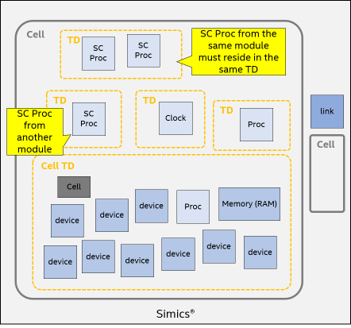

SystemC* Library
Simics SystemC* Library provides support for creating and running SystemC models in Simics. SystemC, as standardized by IEEE-1666, is a C++ class library and a methodology that can be used to create cycle-accurate or transaction-level models of hardware. When choosing to develop models in SystemC for use in Simics it is important to be aware that there exists some fundamental differences in vocabulary, methodology, and features compared to writing models directly to the Simics API. While SystemC Library attempts to minimize those differences it cannot do so completely.
SystemC Library provides three basic capabilities. It makes it possible to run SystemC models in Simics with only a few minor changes compared to running a stand-alone SystemC simulation. Note that none of these changes are to the SystemC model itself. SystemC Library also provides awareness and inspection capabilities of SystemC models running in Simics by connecting SystemC concepts, such as the object hierarchy and the sc_report mechanism to the corresponding Simics concepts. Support for tracing and breaking on SystemC ports and exports as well as signals is provided. Finally, SystemC Library provides a mechanism to connect SystemC models with traditional Simics models through the use of interface gaskets.
SystemC was originally designed to supplement or replace RTL and HDL modeling with languages such as Verilog or VHDL. One of the goals with SystemC 2.0 was to enable system-level modeling at a higher level of abstraction than RTL. In this tradition the SystemC kernel implements an event based timing model with delta-cycles similar to VHDL where there is an "outer" simulation loop that drives time forward and an "inner" loop that stabilizes all signals during the delta-cycles.
Systems modeled in SystemC are made up of a number of SystemC modules (C++ classes) that are connected at compile-time using ports and signals and implement their functionality in processes (C++ methods) and threads (coroutines). A SystemC module is simply a C++ class derived from sc_module provided by the SystemC kernel. The module includes processes and threads that are simply member functions of the class that may be "registered" as sensitive to a specific port. A port can represent different "activation signals"; such as the rising and falling of a clock's edge or, at a higher level of abstraction, an arbitrary C++ type being passed from one module to another via a signal connected to a port.
To further support system-level modeling the Transaction-level Modeling (TLM) standard was proposed as an addition to SystemC. SystemC TLM 2.0 (hereafter TLM2) extends SystemC with a set of core interfaces, a global quantum for temporal decoupling, initiator and target sockets, a generic payload and base protocol, and some utilities.
This document assumes that the reader has a basic knowledge of Simics. It is recommended to be familiar with the contents of the
Simics User's Guide and to have performed the introductory steps in
Getting Started with Simics. It is useful if the reader is able to find relevant information in the
API Reference Manual. At the very least, the reader should be familiar with starting Simics and loading a configuration.
It is also recommended to be familiar with basic Simics Model Builder concepts, such as building a module, creating a module test, as well as familiarity with the C++ API. Please refer to the
Model Builder User's Guide and the
C++ Device API Programming Guide for more information. The reader is expected to be familiar with SystemC and Transaction-level Modeling (TLM).
This document describes how to run SystemC models in Simics and how to integrate them with Simics models written for the Simics API. It does not try to cover how to write good SystemC models. For more details about SystemC, refer to the IEEE-1666 standard.
This document serves multiple purposes and has been constructed to try to meet these requirements. It starts out with a brief introduction to SystemC Library and a quick tutorial on how to get started. This is followed up by a chapter on how to connect SystemC models with Simics. That chapter starts off with a hands-on example highlighting all the building blocks including testing and configuration. The chapter follows up with some guidelines before it goes into details on how the gaskets work and how users can write their own. The chapter is rounded off by describing two common gaskets. The next chapter covers all the features. More advanced topics about how SystemC models are executed in the Simics simulator is described next. All known major limitations are listed as a separate chapter. Last chapter is about the compile-time requirements.
The document can be used both as a tutorial and as reference. It has not been written in such a way that it would make sense to read it from cover to cover.
Because C++ does not have a standardized ABI, all SystemC Library modules as well as all SystemC models built from these modules must be compiled with exactly the same compiler, compiler version, and compiler flags. It works perfectly fine to include binary SystemC models as long as they are Accellera compliant and the compiler guidelines just outlined are followed.
As of Simics 6 it is also possible to combine Simics SystemC modules compiled with different toolchains, provided each individual module has been constructed from a set of binaries built using the same toolchain.
The SystemC Library has been moved out of the Simics Base package to a separate package 1013 (SystemC Library). Users of the Simics SystemC Library must install the package 1013.
The SystemC Library supports the Accellera kernels 2.3.3, 2.3.4, and 3.0.0. The supported and known to be working configurations are:
| SystemC kernel version | Linux | Windows |
|---|
| 2.3.3/2.3.4 | GCC 6.4 or 12 with C++14 or C++17 | MSVC 2015/2022 |
| 3.0.0 | GCC 12 with C++17 | MSVC 2022 |
These are the only versions tested by Simics regression tests.
Simics does not guarantee that the Simics SystemC Library API will not change between releases. Simics' SystemC support is still being gradually improved and a completely frozen API would limit what improvements can be made. A lot of effort will, however, be made to avoid changing the API. If a change is needed, the end-user effort will be minimized.
The simplest case of running a SystemC model in Simics is to run it without any connections to models written in other languages, a so called SystemC-only model. When working with the proof of concept implementation of SystemC provided by Accellera it is common to build an executable by providing an implementation of sc_main that assembles the model hierarchy, starts the simulation, and performs any cleanup actions. Because of the dynamic nature of Simics the model will be a Simics module instead of a standalone application. This allows Simics to instantiate one or more copies of the model at run-time using the normal Simics configuration mechanisms. To achieve this the sc_main function is replaced by a Simics configuration object. The purpose of this object is the same as sc_main: create the model hierarchy, provide a way to start the simulation, and perform any cleanup. The difference is that now the object hierarchy is created when the Simics object is instantiated and the cleanup is done when the Simics object is destroyed. Simulation control is also handled by Simics, using standard Simics commands such as continue and stop.
Here a standalone application refers to an executable that runs in its own process without Simics. Typically, sc_main is implemented as the entry point to the application.
Running a SystemC model in Simics does not affect the model's behavior and this fact can be leveraged when integrating models with Simics. It is recommended to first verify that the functionality is as expected by running the model as a standalone application before integrating with Simics. The verification is typically done using a SystemC test bench, which may be reused later as a Simics model test.
To get started with a SystemC-only model in Simics it is best to begin with a simple example. Create a new SystemC-only model in your project by issuing the command: ./bin/project-setup --sc-only-device empty-device-sc-only
This command copies a SystemC-only model skeleton from the installation into the module directory of the project with the name empty-device-sc-only.
The empty-device-sc-only module contains a very simple SystemC device, in three source files: sc-device.h, sc-device.cc, and sc-main.cc. Compiled together, these three files contain all the relevant code to run the simulation standalone, i.e., as a separate application outside of Simics. The Makefile for this standalone application is not provided but is easy to write since the only dependency for this module is the SystemC kernel. The entire source code is shown below.
#ifndef EMPTY_DEVICE_SC_ONLY_SC_DEVICE_H
#define EMPTY_DEVICE_SC_ONLY_SC_DEVICE_H
#include <systemc>
SC_MODULE(DeviceModel) {
public:
SC_CTOR(DeviceModel) : count_(10) {
SC_THREAD(run_test);
}
void set_count(int count) { count_ = count; }
int get_count() const { return count_; }
private:
void run_test();
int count_;
};
sc_core::sc_module *setup(int argc, char *argv[]);
void teardown(sc_core::sc_module *top_level);
#endif // EMPTY_DEVICE_SC_ONLY_SC_DEVICE_H
#include "sc-device.h"
namespace {
const char *const TAG = "intel/empty-device-sc-only/info";
}
void DeviceModel::run_test() {
while (--count_ >= 0) {
SC_REPORT_INFO(TAG, "Looping...");
wait(sc_core::sc_time(500, sc_core::SC_NS));
}
}
sc_core::sc_module *setup(int argc, char *argv[]) {
DeviceModel *top = new DeviceModel("top");
if (argc > 1) {
int count = atoi(argv[1]);
top->set_count(count);
}
return top;
}
void teardown(sc_core::sc_module *top_level) {
delete top_level;
}
#include "sc-device.h"
int sc_main(int argc, char *argv[]) {
sc_core::sc_module *top_level = setup(argc, argv);
// coverity[fun_call_w_exception]
sc_core::sc_start();
teardown(top_level);
return 0;
}
This device has a counter which counts down every 500 nano seconds. When it counts down, a message as shown below is printed to the standard output.
Info: intel/empty-device-sc-only/info: Looping...
By default, the above message is printed 10 times since counter is initialized to 10 in the constructor. This value can be modified by passing an integer argument when the application is executed.
Now that we have verified the functionality of this simple SystemC device, let's move on to next section on how to run it in Simics. The same behavior will be observed when it runs in Simics.
To create a Simics module instead of a standalone application, the file sc-main.cc is replaced with a similar entry-point that defines a Simics class instead of creating an application.
#include <simics/systemc/sc_factory.h>
#include "sc-device.h"
#define CLASS_NAME "empty_device_sc_only"
#define CLASS_DESC "example SystemC device"
#define CLASS_DOC "The <class>" CLASS_NAME "</class>" \
" class runs a SystemC-only device in Simics."
simics::systemc::RegisterModel model(CLASS_NAME, CLASS_DESC, CLASS_DOC,
setup, teardown);
The example above may need some explanation. It registers a new configuration class with Simics. The name of the class is empty_device_sc_only and the documentation and short description are provided by the CLASS_DOC and CLASS_DESC constants. The class is registered by creating an instance of the simics::systemc::RegisterModel in the file scope, that is as a global or static variable, or in a unnamed namespace. When the module is loaded into Simics, all objects defined in file scope will be constructed and the model object will take care of registering the empty_device_sc_only class with Simics. Simics will now know how to instantiate this class, which in turn will be responsible for instantiating the rest of the SystemC subsystem, as defined by the provided setup function. When the configuration object is destroyed, the registered teardown function, if any, will be called with the return value of setup. The return value from setup and the argument to teardown can be a pointer to any type, the only restriction is that they have to match. It is also possible to have a void return value from setup, in which case teardown does not take any arguments.
The device can be built by running make empty-device-sc-only in the top-level project directory. Refer to the Model Builder User's Guide for more details.
No binaries are shipped from the Simics package. Therefore, these binaries must be built before any device modules can be constructed. See 8 for more details.
To test the device in Simics it is necessary to instantiate it. This is easily done from the Simics CLI, by calling the SIM_create_object function via the Python API:
simics> @SIM_create_object('empty_device_sc_only', 'dev')
<the empty_device_sc_only 'dev'>
To see what objects exist in the simulation, the list-objects command can be used:
simics> list-objects -show-port-objects substr = dev
┌──────────────────────────┬────────────────────────────────────────┐
│ Object │ Class │
├──────────────────────────┼────────────────────────────────────────┤
│dev │<empty_device_sc_only> │
│dev.cci_global │<empty_device_sc_only_cci_global> │
│dev.engine │<co-execute> │
│dev.engine.vtime │<vtime> │
│dev.engine.vtime.cycles │<cycle-counter> │
│dev.engine.vtime.ps │<ps-clock> │
│dev.sc_event_all_dynamic │<ScEventObjectAllDynamic> │
│dev.sc_process_all_dynamic│<sc_method_process_all_dynamic> │
│dev.top │<empty_device_sc_only_sc_module> │
│dev.top.run_test │<empty_device_sc_only_sc_thread_process>│
│dev.vtime │<vtime> │
│dev.vtime.cycles │<cycle-counter> │
│dev.vtime.ps │<ps-clock> │
└──────────────────────────┴────────────────────────────────────────┘
In this example dev is the Simics configuration object that wraps the SystemC subsystem, dev.top is the SystemC device returned by setup, and dev.top.run_test is the thread process in dev.top that will call SC_REPORT_INFO and print the "Looping..." output shown in the example output below.
The dev.engine, dev.vtime and their sub-objects are Simics helper objects and can be ignored.
Before running the simulation, turn up the log-level to 2 or higher in order to show reports of INFO type and normal verbosity:
simics> dev.log-level 2
simics> continue
[dev info] Looping... @ 0 s of intel/empty-device-sc-only/info in sc-device.cc:14
[dev info] Looping... @ 500 ns of intel/empty-device-sc-only/info in sc-device.cc:14
[dev info] Looping... @ 1 us of intel/empty-device-sc-only/info in sc-device.cc:14
[dev info] Looping... @ 1500 ns of intel/empty-device-sc-only/info in sc-device.cc:14
[dev info] Looping... @ 2 us of intel/empty-device-sc-only/info in sc-device.cc:14
[dev info] Looping... @ 2500 ns of intel/empty-device-sc-only/info in sc-device.cc:14
[dev info] Looping... @ 3 us of intel/empty-device-sc-only/info in sc-device.cc:14
[dev info] Looping... @ 3500 ns of intel/empty-device-sc-only/info in sc-device.cc:14
[dev info] Looping... @ 4 us of intel/empty-device-sc-only/info in sc-device.cc:14
[dev info] Looping... @ 4500 ns of intel/empty-device-sc-only/info in sc-device.cc:14
running> stop
simics>
Simics can be used as a framework for testing and developing SystemC models in isolation, or it can be used to integrate SystemC models with other Simics models. The integration spans from just a single model to a full virtual platform. Simics models can be written in any language as long as they use the Simics API and Simics interfaces to communicate. A Simics model consists of a Simics configuration class, instantiated as a Simics object. In Simics SystemC Library this object is called adapter.
SystemC Library makes it possible to run multiple SystemC models in the same Simics configuration at the same time, possibly instantiated at different points in time (i.e. dynamically) and optionally connected directly or indirectly to one another. It is important to understand that each adapter instance will get its own context and that communication via the SystemC scheduler between instances will not be possible; all communication between adapters must go via Simics interfaces.
Also note that time and ordering when communicating between multiple SystemC kernels is not defined by the IEEE SystemC specification. That is, no ordering assumptions can be made when two SystemC models communicate with each other via Simics interfaces.
The project-setup tool can be used to generate a new Simics module with a skeleton of a SystemC device connected to Simics via a SystemC adapter: ./bin/project-setup --sc-device name, where name is the name of the new Simics module.
Simics contains well defined and stable interfaces for various hardware specific protocols such as Ethernet, USB, PCIe, etc. There is no SystemC standard that covers such protocols yet. Instead, each set of modules must agree on a custom protocol on top of the TLM2 base protocol and any deviations must be handled by an interconnect module. Simics contains a set of interface converters, called gaskets, for a number of common Simics interfaces like memory mapped I/O (MMIO), signal, PCI Express, Ethernet, I2C, etc. These gaskets convert the Simics interface into (or from) a TLM2 payload extension transmitted using the standard TLM2 interface and protocol. Simics provides utility functions to make it easy to pack or unpack the protocol-specific payload extensions.
SystemC Library only supports Simics -> SystemC and SystemC -> Simics interface calls via gaskets. Direct invocation of Simics interfaces are not officially supported.
There is also a non-TLM2 based gasket, converting the Simics signal interface to/from the SystemC sc_signal<bool>.
Signals work a bit differently when routed through Simics. There is no support for sc_signal<T> of arbitrary type T, as there is no corresponding interface in Simics that supports this. In addition, when connecting SystemC configurations via Simics interfaces it is important to understand that each adapter will have its own separate kernel context, and thus cannot rely on delta cycle communication via the scheduler; which is very common when using SystemC signals. Simics does not maintain a global order of SystemC events. There are two ways to address this problem:
- Integrate everything that needs to communicate via the SystemC scheduler/delta cycles with the same adapter.
- Re-construct the model
The complete list of supported gaskets can be found in the
SystemC Library API Reference Manual. Users can also create their own gaskets to support additional or custom interfaces. See 4.6 for more details.
This section demonstrates how to expose a simple DMA device written in SystemC to Simics and how to test it using Simics Python tests. The DMA device example source code is available in the Simics Base package and can be added to the project by issuing the command: ./bin/project-setup --copy-module systemc-dma-device in the Simics project directory. This DMA device has no dependency on Simics and can be built as a standalone application. By default, it is built with Intel SystemC kernel by issuing the following command: make -f modules/systemc-dma-device/Makefile.standalone
No binary is included for Intel SystemC kernel. It needs built in the Simics project first before building the DMA standalone application. See 8 for more details about building Intel SystemC kernel.
User can also build the standalone application using their own SystemC kernel by configuring the SYSTEMC_CORE_CFLAGS and SYSTEMC_CORE_LDFLAGS flags.
The device's code will not be described in detail in this guide, but basically, the device implements a simple DMA device with source and destination address registers as well as a control register to start a DMA transaction and control some features such as interrupt on completion. The DMA device can work in "polling" mode, where the software checks the status bit in the control register for DMA completion, or it can work in interrupt mode where an interrupt is issued when the transfer is completed. In addition the DMA device supports reset. The interrupt and reset are modeled as SystemC signals and inbound and outbound memory accesses are modeled as SystemC TLM2 transactions. The focus of this section is on showing how these signals and transactions are translated to Simics interface calls.
In order to connect the SystemC DMA device to Simics an Adapter class is defined as shown below:
namespace scl = simics::systemc;
class Adapter : public scl::Adapter,
public scl::simics2tlm::TransactionGasketAdapter,
public scl::simics2tlm::DirectMemoryUpdateGasketAdapter {
public:
explicit Adapter(simics::ConfObjectRef o)
: scl::Adapter(o),
TransactionGasketAdapter(&systemc_transaction_, this),
DirectMemoryUpdateGasketAdapter(&systemc_direct_memory_update_, this),
dma_(this, "DMADevice") {
systemc_transaction_.set_gasket(scl::simics2tlm::createGasket(
&dma_->mmio_socket_, o));
simics_interrupt_->set_pin(&dma_->interrupt_);
simics_memory_space_->set_gasket(scl::tlm2simics::createGasket(
&dma_->phys_mem_socket_, o));
systemc_direct_memory_update_.set_gasket(
simics_memory_space_->gasket());
systemc_reset_.set_pin(&dma_->reset_, false, o);
}
static void init_class(simics::ConfClass *cls);
// Outgoing from DMA device to Simics
scl::Connector<scl::tlm2simics::MemorySpace> simics_memory_space_;
scl::Connector<scl::systemc2simics::Signal> simics_interrupt_;
class Port : public simics::Port<Adapter>,
public scl::simics2systemc::SignalGasketAdapter {
public:
explicit Port(simics::ConfObjectRef o)
: simics::Port<Adapter>(o),
SignalGasketAdapter(&parent()->systemc_reset_, parent()) {
}
};
private:
double get_throttle() const {
return dma_->throttle_;
}
void set_throttle(double value) {
dma_->throttle_ = value;
}
// Incoming from Simics to DMA device
scl::simics2systemc::Signal systemc_reset_;
scl::simics2tlm::Transaction systemc_transaction_;
scl::simics2tlm::DirectMemoryUpdate systemc_direct_memory_update_;
// DMA device implementation by SystemC/TLM
scl::Device<DMADevice> dma_;
};
In the code example, the Adapter class:
- defines the Simics configuration class to be instantiated by Simics, and
- implements all Simics interfaces needed, and
- provides connectors for all outbound calls of Simics interfaces implemented by other Simics objects.
A Simics interface is defined by a set of function pointers. To expose such an interface from a SystemC model to Simics the set of function pointers should be mapped to the functions of an object which implements the corresponding C++ version of the interface. A simics-interface-adapter is used for this purpose. It provides the necessary static functions and forwards Simics interface function calls to the object. The simics-interface-adapter must be registered with Simics, along with the Adapter class, as shown in the init_local function later in the chapter.
The implementation of the C++ version of the Simics interface is provided by a gasket-adapter. In the code example, the Adapter class derives from several gasket-adapter classes and thus exposes the corresponding interfaces. To expose the same type of interface multiple times, gasket-adapters on port are needed. See 4.7 for more details. Additionally, gasket-adapters are responsible for managing simulation context.
The gasket-adapter forwards the C++ interface call to the corresponding gasket which then translates the call to the corresponding SystemC semantics. In the DMA example there is a gasket, called simics::systemc::simics2systemc::Signal, which converts a call to the Simics signal interface into a SystemC signal; and there is another gasket, called simics::systemc::simics2tlm::IoMemory, which converts a call to the Simics io_memory interface into a call to TLM2 b_transport. Each gasket must be bound to the SystemC target and corresponding gasket-adapter in the constructor of the Adapter class.
The gasket which translates Simics interface call to a TLM2 transaction is special and needs additional explanation. In fact, this gasket is a gasket-owner or a container for several gasket-owners with specific IDs, where each gasket-owner owns one generic tlm-gasket object. The multiple gasket-owners and corresponding tlm-gaskets are needed for protocols where a single Simics interface is demultiplexed into multiple TLM target sockets. The gasket-owner creates a TLM generic payload with protocol specific extension which is then transmitted to the SystemC target using the tlm-gasket. Each tlm-gasket must be created and bound to the SystemC target with the help of createGasket factory function. Then, the tlm-gasket must be assigned to a gasket-owner which in turn must be connected to the corresponding gasket-adapter, as shown in the constructor of the Adapter class.
To connect a SystemC device to a Simics model via a Simics interface it is necessary to:
-
Register a simics-interface-adapter on the configuration class
-
Derive the Adapter class from the corresponding gasket-adapter class, and initialize it with the corresponding gasket
-
Bind the SystemC target to the gasket using the gasket's member function
- For TLM2 sockets, create an instance of the tlm-gasket and bind it to the SystemC target socket using
simics2tlm::createGasket factory function. Then, assign the tlm-gasket to the gasket with the help of set_gasket method of the gasket class
-
Add the gasket as a member to the Adapter class
In the example the Adapter uses the following gaskets and gasket-adapters:
IoMemory and IoMemoryGasketAdapter - for inbound MMIO, corresponding to Simics io_memory interfaceSignal and SignalGasketAdapter - for reset, corresponding to the Simics signal interfaceDirectMemoryUpdate and DirectMemoryUpdateGasketAdapter - to support SystemC direct memory interface (DMI) optimization.
A gasket can be used to access the SystemC model from Simics. But it is not the only supported entry point to do this. These are the supported entry points:
-
Gasket. Can be used for bridging from a Simics interface to a TLM/SystemC interface. For example, raising/lowering a Simics signal interface which connects to SystemC model via gasket will raise/lower the SystemC input signal.
-
Device utility class. Whenever the SystemC model is accessed from the adapter directly, this utility class must be used. See code example below.
uint32 getRegister1() const {
return simple_device_->register1();
}
void setRegister1(const uint32 &val) {
register1_ = val;
if (SIM_object_is_configured(obj())) {
simple_device_->set_register1(val);
}
}
register1 and set_register1 are functions defined in SystemC model, but called from the device utility class. In this way, it ensures that the correct simulation context is set in the SC kernel.
-
Scheduler. The adapter has a helper object, adapter.engine, that allows for the adapter to be scheduled by Simics. When scheduled, it runs SystemC time forward via the SystemC scheduler. Simics events can be posted on the adapter and are interleaved with the SystemC events and processes. Please note that Simics events would still need to communicate with SystemC via the adapter using Simics interfaces. The helper object always runs in picoseconds so running the adapter 1 ps forward will also run the SystemC scheduler 1 ps forward.
To access a Simics interface, implemented by a Simics object, from a SystemC model the Simics object must be assigned to a Simics attribute first. The attribute is created and registered with Simics using ConnectorAttribute helper class in the init_local function, and is called connector-attribute hereafter. The connector-attribute is needed to link the Simics attribute to the connector, which is a member of the Adapter class. The connector is a Connector class that wraps the gasket which is responsible for translation of the SystemC semantics to a call of the corresponding Simics interface. Also, the connector makes sure that the Simics interface that the gasket is intended to work with is implemented by the Simics object given to the connector-attribute. In the DMA example the adapter contains two connectors and hence two corresponding gaskets: one for converting a DMA SystemC TLM2 transaction to a Simics memory_space interface call; and the other for converting an interrupt signal issued on a DMA completion to a Simics signal interface call.
Similarly to the Simics-to-TLM case, the gasket which translates a TLM2 transaction to a Simics interface call is actually the gasket-owner which owns another tlm-gasket. Each tlm-gasket must be created and bound to the SystemC source, as well as assigned to a connector, as shown in the constructor of the Adapter class.
In summary, to access a Simics interface from SystemC model it is necessary to:
- Register a connector-attribute on the configuration class
- Add corresponding connector, which wraps a gasket, as a member of the
Adapter class
- Bind the SystemC source to the connector
- For TLM2 sockets, create an instance of the tlm-gasket and bind it to the SystemC source using
tlm2simics::createGasket factory function. Then, assign the tlm-gasket to the connector with the help of arrow operator and the set_gasket function
Calling a Simics interface-specific extension's method will result in an invocation of b_transport and thus must be done from an SC_THREAD process according to the SystemC IEEE specification.
To register the adapter with Simics an instance of the template class ClassDef is created the same way as if the C++ Device API is used. The init_local function from the DMA example is shown below:
extern "C" void init_local(void) {
auto cls = simics::make_class<Adapter>(
"sample_tlm2_dma_device", "sample SystemC TLM2 DMA device",
"The <class>sample_tlm2_dma_device</class> is a Simics module"
" encapsulating a SystemC TLM2-based dma device to demonstrate"
" the use of the Simics SystemC Library.");
}
The code also demonstrates how the connector-attributes and the simics-interface-adapters are registered with Simics along with the Adapter class.
For a new SystemC model written from scratch or a simple SystemC model, it is recommended to compile it within the Simics project along with the adapter file. This approach ensures ABI compatibility since the same compiler, C++ language standard, and compiler options are used for both the SystemC model, the adapter file, and the SystemC Library libs.
By compiling the SystemC model within the Simics project, you can take advantage of the build system and configurations already set up for the Simics project. This simplifies the build process and ensures that all parts are compiled with the same settings.
However, there may be situations where the SystemC model already exists and it is challenging to integrate it into an Simics project. Or, the SystemC model source can not be provided to Simics for various reasons. In such cases, it may be necessary to compile the SystemC model outside of the Simics project. This can be done by following these steps:
To ensure ABI compatibility, it is required to compile all the C++ files and libraries used in the following steps with the same version of the compiler, C++ language standard, and other compiler options that can impact the ABI compatibility.
-
Compile the SystemC model: In this step, the SystemC model is compiled separately outside of the Simics project.
Since Simics SystemC kernel is ABI compatible with the Accellera Standard SystemC kernel, it is not required to include the Simics SystemC kernel headers. An Accellera-compliant (ABI compatible) SystemC kernel of the same version as the one provided in Simics is OK to use when compiling the SystemC model.
It is required to use the -fPIC (Position Independent Code) compiler option when compiling the SystemC model. This ensures that the code within the shared Simics module can be loaded and executed correctly.
Do not link the object files with the SystemC kernel library. The missing symbols from the SystemC kernel are resolved in step 4.
-
Add the .o files from step 1 to the Simics module build: The previous step generates object files (.o) for each source file in the SystemC model. These object files contain the compiled code and symbols specific to the model. They can be linked into the Simics module. This involves adding the necessary linker flags and paths in the Simics project's build system (e.g., Makefile, CMakeLists.txt) to include the SystemC model's object files during the linking phase. For example, specify the object files in the Simics Makefile variable EXTRA_OBJ_FILES.
-
Add the dependencies needed by the .o files from step 1 to the Simics module build: This involves adding the necessary linker flags and paths in the Simics project's build system (e.g., Makefile, CMakeLists.txt) to include the SystemC model's dependencies during the linking phase. The Simics Makefile variables like MODULE_CFLAGS and MODULE_LDFLAGS could be used here.
-
Build the Simics Module: Finally, the Simics module is built using the Simics project's build system. The build process includes compiling the Simics module's source files and linking them with the SystemC model's object files, along with any other necessary dependencies.
By following this approach, the pre-compiled SystemC model can be integrated into the Simics project without the need to modify the original code.
Here is an example about how to compile a simple SystemC DMA model outside of Simics project and be used to link into a Simics module. The SystemC model in sample-tlm2-dma-device is used as an example, this model has no dependencies on the Simics files and any arbitrary SystemC model should work in the same way.
-
Copy dma-device.cc and dma-device.h from Simics SystemC Library package to a folder /path/to/device
-
Download SystemC kernel from Accellera to /path/to/systemc
-
Write a Makefile to compile the dma-device
CXX := /path/to/g++
CXXFLAGS := -fPIC -I/path/to/systemc/src
all: dma-device.o
%.o : %.cc
$(CXX) $(CXXFLAGS) $^ -c
-
Compile the C++ file by invoking make:
[/path/to/device] $ make
-
The generated object file dma-device.o can be linked into the Simics module by removing dma-device.cc from SRC_FILES and adding the following line in the Simics module's makefile:
EXTRA_OBJ_FILES += /path/to/device/dma-device.o
Once the adapter has been implemented the model can be instantiated and connected in Simics like any other Simics model.
The vacuum target is good for simple testing, and using it the DMA device can be instantiated as follows:
simics> @SIM_create_object('sample_tlm2_dma_device', 'dma', phys_mem=conf.phys_mem)
<the sample_tlm2_dma_device 'dma'>
You can start the vacuum target from the GUI or command line, or by issuing the following command at the Simics prompt: run-script "%simics%/targets/vacuum/vacuum.simics"
Since the DMA device requires a memory-space where DMA operations are supposed to occur it is provided in the initial set of attributes. To access the registers in the DMA device it is necessary to map it in the IO space:
simics> phys_mem.add-map device = dma base = 0x1000 length = 0x100
Mapped 'dma' in 'phys_mem' at address 0x1000.
simics>
To configure and test the DMA device a pattern will be written to RAM and copied using the device:
simics> phys_mem.write 0x10000000 0xdeadbeef 8 -l # pattern
simics> phys_mem.write 0x1004 0x10000000 4 -l # src
simics> phys_mem.write 0x1008 0x10001000 4 -l # dest
simics> phys_mem.write 0x1000 0xc0000008 4 -l # control (start transfer)
simics> phys_mem.x 0x10001000
p:0x10001000 efbe adde 0000 0000 0000 0000 0000 0000 ................
simics>
Of course, more commonly the model will be instantiated from a module test or a component. Look in the test directory of the sample-tlm2-dma-device module's source code for more examples.
Sometimes it is necessary to pass configuration parameters to the constructor of the SystemC device. Such configuration parameters are typically passed to the adapter via Simics attributes. Since the attributes are not available in the constructor of the corresponding Adapter class the creation of the SystemC device has to be deferred to the finalize phase. The Adapter class has two convenient methods that are called in the beginning of the finalize phase, right after the SystemC context has been set up. These methods are elaborate and bindGaskets. The elaborate method is intended for SystemC elaboration where Simics configuration attributes are required. Otherwise the elaboration could be done entirely in the Adapter constructor. The bindGaskets method is used to bind gaskets and other ports created in the elaborate method. An example of the methods is shown in the sample-tlm2-simple-device device model:
class Adapter : public scl::Adapter
[...]
void elaborate() {
// Because we create the Device in elaborate, any attribute setters that
// use it must be guarded against early access (e.g. during checkpoint
// restore)
SimpleDevice *top = new SimpleDevice("simple_device", delay_ns_);
scl::Device<SimpleDevice> d(this, top);
simple_device_ = d;
// Handle attribute side-effects here
simple_device_->set_register1(register1_);
simple_device_->set_register2(register2_);
}
void bindGaskets() {
systemc_io_memory_.set_gasket(
scl::simics2tlm::createGasket(&simple_device_->target_socket,
obj()));
}
int delay_ns_; // Configured by attribute
private:
// The SystemC TLM device wrapped by the Simics object.
// NOTE: Must use the Device utility class to make sure any access to the
// SystemC device is handled correctly.
scl::Device<SimpleDevice> simple_device_;
[...]
Special care has to be taken if the adapter or SystemC model has dependencies on other Simics objects. It may be tempting to rely on the dependencies during the attribute setting phase, but this is not allowed. Simics objects, referenced by attributes, and interfaces they implement are not allowed to be accessed before the finalize phase. In the finalize phase SIM_require_object must be called on a Simics object first to ensure that the object is configured. See
Model Builder User's Guide for more details on attribute initialization order.
Simics and the provided SystemC Library are both very flexible and can be configured in many different ways. For example, a virtual platform project may choose to use one or multiple adapters to map SystemC devices into Simics. It is important to understand these different configuration options since the selected solution will impact the overall performance of the virtual platform.
Each SystemC Library based Simics module is statically linked with Intel SystemC Kernel (ISK). Each adapter instance from each such module, when created in Simics, will be assigned its own kernel context (i.e. the sc_simcontext).
The kernel contexts are isolated from one another, making it impossible to communicate during delta cycles between adapters using the SystemC scheduler. Hence, if really tight integration is required between two different SystemC modules, it is suggested to wrap them using a single adapter.
Even though Simics SystemC Library supports multiple instances of each adapter, the kernel itself is not thread-safe. This means that extra care must be taken when creating multi-cell configurations. There are two rules:
- The adapter must be put in the same cell as the objects it communicates with. Please run
check-cell-partitioning to verify that the cells have been setup correctly.
- Multiple instances of the adapter(s) in same Simics module cannot span multiple cells. To be able to run the SystemC model in multiple cells (i.e. in parallel) it must be wrapped by two separate Simics modules.
For the same reason, multiple instances of adapters from the same Simics module does not work in the multicore accelerator mode either.
It is also encouraged to read up on the set-time-quantum command. This command can be used to change the fidelity of the interaction/scheduling between different Simics clocks. That is, one can specify the number of cycles that should be executed on each Simics clock before the next Simics clock is being scheduled. A large time quantum makes it possible to leverage decoupling and ISS optimizations and a small time quantum is good for tight integration between models.
It should also be noted that it is possible to change the number of instructions that are executed per cycle in Simics. This can also be used to tweak how much time is spent and work is done in the different models. Hence, it can be used to change tightness of interaction versus performance in the virtual platform. Please refer to the
Simics User's Guide and the
API Reference Manual for more information.
It is suggested that these parameters are considered for each virtual platform project and use case.
As already explained, there is a chain of objects that interact in order to translate a Simics interface invocation into a SystemC signal or TLM2 transaction and vice versa. SystemC Library already provides simics-interface-adapters for the most common of Simics interfaces, gasket-adapters and gaskets needed. But for other interfaces, or custom interfaces, these classes must be provided by the model developer.
The best way to implement a new set of classes for an unsupported Simics interface is to base it on an existing set. The SerialDevice gasket and accompanied set of classes can be used as an example as it maps the Simics serial_device interface for both Simics → TLM and TLM → Simics directions. We will follow this example in this chapter to describe the typical set of classes to be added by the model developer. The details for each type of class can be found in the
SystemC Library API Reference Manual. The new set should be added to a separate module referenced by EXTRA_MODULE_VPATH until it has eventually been merged into SystemC Library.
Any gasket written for a standard Simics interface should be sent to the Simics team for inclusion into the library.
The Simics to TLM invocation chain, which translates Simics interface call to TLM2 transaction, looks like this: Simics interface → simics-interface-adapter → gasket-adapter → gasket-owner → tlm-gasket → SystemC TLM2 target socket.
The io_memory and serial_device are two good examples of Simics interfaces translated into TLM2. The io_memory interface translates to a generic payload, but the serial_device interface translates to a protocol specific extension using built-in Simics interface to TLM payload extension marshal/unmarshal capabilities. See the SerialDeviceExtension class for details.
It is highly recommended to use the built-in marshal/unmarshal capabilities to cut down on the number of Simics specific details exposed to the SystemC model.
Though it is possible to use the Simics C++ API to implement a Simics interface on the Adapter class and forward the interface call to the SystemC model, this is highly discurraged. It is important that the SystemC simulation context is properly set on enter and reset on exit. Failure to set SystemC simulation context will lead to a crash.
This is provided by a utility classes in the SystemC Library. More specifically, Context class used by the gasket-adapters. Also the tlm-gasket itself, defined by the Gasket class, provides the necessary wrappings for running the transaction in an SC_THREAD since b_transport method might call wait function.
For describing how custom gaskets are created we will use the simics2tlm::SerialDevice class as an example. The Simics header file simics/devs/serial-device.h specifies the Simics interface as:
SIM_INTERFACE(serial_device) {
int (*write)(conf_object_t *obj, int value);
void (*receive_ready)(conf_object_t *obj);
};
Using the simics-interface-adapter, defined by SerialDeviceSimicsAdapter class, the Simics interface is translated to the corresponding C++ interface. See the file simics/systemc/iface/serial_device_simics_adapter.h for reference. The Simics C++ interface is defined in the file simics/systemc/iface/serial_device_interface.h:
class SerialDeviceInterface {
public:
virtual int write(int value) = 0;
virtual void receive_ready() = 0;
virtual ~SerialDeviceInterface() {}
};
As one may notice, the same functions are provided but without the conf_object_t pointer as parameter. The obj parameter is replaced with the this pointer in C++.
Though it is possible to use different function names in the two interfaces, it is recommended to keep the same names for clarity.
The Simics C++ interface function call is further translated to the call of corresponding function in the gasket. The translation is required to adjust simulation context before the SystemC code is entered and is performed in the SerialDeviceGasketAdapter class:
class SerialDeviceGasketAdapter
: public iface::SerialDeviceInterface,
public GasketAdapter<iface::SerialDeviceInterface> {
public:
SerialDeviceGasketAdapter(SerialDeviceInterface *serial_device,
iface::SimulationInterface *simulation)
: serial_device_(serial_device), simulation_(simulation) {
}
int write(int value) override {
Context context(simulation_);
return serial_device_->write(value);
}
void receive_ready() override {
Context context(simulation_);
serial_device_->receive_ready();
}
simics2tlm::GasketOwner *gasket_owner() const override {
return dynamic_cast<simics2tlm::GasketOwner *>(serial_device_);
}
private:
SerialDeviceInterface *serial_device_;
iface::SimulationInterface *simulation_;
};
The serial_device_ member is a helper object which combines the adjustment of the simulation context, provided by simulation_ member, with the call of the Simics C++ interface function implemented by the gasket. The gasket is defined by the SerialDevice class in the simics/systemc/simics2tlm/serial_device.h:
class SerialDevice : public simics::systemc::iface::SerialDeviceInterface,
public GasketOwner {
public:
virtual void gasketUpdated();
// SerialDeviceInterface
int write(int value);
void receive_ready();
private:
ExtensionSender sender_;
iface::SerialDeviceExtension extension_;
};
The extension_ member, defined by SerialDeviceExtension class, provides utility functions to perform marshalling of the interface data to a protocol specific TLM extension. The TLM extension along with payload is then sent to the SystemC target with the help of the sender_. The protocol specific extensions are described in the 4.6.3.
The TLM to Simics invocation chain looks like this: SystemC TLM2 initiator socket → tlm-gasket → gasket-owner → Simics interface.
The memory_space and serial_device are two good examples of Simics interfaces translated from TLM2. The memory_space interface translates from a generic payload, but the serial_device interface translates from a protocol specific extension using built-in Simics interface to TLM payload extension marshal/unmarshal capabilities. See the SerialDeviceExtension class for details.
It is highly recommended to use the built-in marshal/unmarshal capabilities to cut down on the number of Simics specific details exposed to the SystemC model.
It is also highly recommended to use the ConnectorAttribute and Connector utility classes when implementing the connector-attribute in the adapter. See the source code for the sample-tlm2-dma-device module for an example of how to do this.
For describing how custom gaskets are created we will use the tlm2simics::SerialDevice class as an example. The definition of this gasket can be found in the file: simics/systemc/tlm2simics/serial_device.h. Being derived from the TransactionHandler class, the SerialDevice gasket class owns the tlm-gasket and performs the translation of the TLM payload to the call of the Simics interface. The translation is initiated by the tlm-gasket via the invocation of the simics_transaction method defined in the SerialDevice class:
class SerialDevice : public InterfaceProvider,
public TransactionHandler,
public iface::SerialDeviceInterface {
public:
SerialDevice() : InterfaceProvider("serial_device"),
TransactionHandler(this,
iface::SerialDeviceExtension::createIgnoreReceiver()),
receiver_(
iface::SerialDeviceExtension::createReceiver(this)) {}
// SerialDeviceInterface
int write(int value) override;
void receive_ready() override;
// TransactionHandler
iface::ReceiverInterface *receiver() override;
virtual ~SerialDevice();
private:
tlm::tlm_response_status simics_transaction(
ConfObjectRef &simics_obj,
tlm::tlm_generic_payload *trans) override;
iface::ReceiverInterface *receiver_;
};
The payload is then forwarded to the receiver_ member which utilizes the utility functions, defined in the SerialDeviceExtension class, to perform unmarshalling of the interface data from the protocol specific TLM payload extension and invoke the corresponding Simics C++ interface function. The protocol specific extensions are described in the 4.6.3.
Being derived from the InterfaceProvider class, the gasket gets the Simics interface, provided by the associated Simics target object, using get_interface template function and performs the interface call.
Simics SystemC Library provides the gaskets which convert Simics interfaces into/from TLM2 generic payloads using SystemC extension mechanism. The extension mechanism allows extending the generic payload, aimed at modeling memory-mapped buses only, with a protocol specific set of attributes, or simply extension, and thus allows transporting any Simics interface specific data.
In SystemC Library each extension is defined by a separate class in the corresponding simics/systemc/iface/*_extension.h header file. As an example in this chapter we refer to the SerialDeviceExtension extension class for the serial_device Simics interface, which is defined in the simics/systemc/iface/serial_device_extension.h file:
class SerialDeviceExtension : public Extension<SerialDeviceExtension,
SerialDeviceInterface> {
public:
virtual void call(SerialDeviceInterface *device) {
switch (method_.value<Method>()) {
case WRITE:
method_return_ = device->write(method_input_[0].value<int>());
break;
case RECEIVE_READY:
device->receive_ready();
break;
}
}
virtual int write(int value) {
method_input_.push_back(value);
method_ = WRITE;
send();
return method_return_.value<int>();
}
virtual void receive_ready() {
method_ = RECEIVE_READY;
send();
}
private:
enum Method {
WRITE,
RECEIVE_READY
};
};
To reduce the number of Simics specific details exposed to the SystemC model the extension provides utility functions which marshal and unmarshal Simics C++ interface specific data. In general, an extension with such utility functions can be implemented for any C++ interface. To send the C++ interface data in a TLM transaction the SerialDeviceExtension class overrides write and receive_ready functions of the SerialDeviceInterface interface class. Each function packs the interface function type along with function arguments into general storage, described later, and calls the send function in order to attach the extension to the payload and initiate the TLM transaction. On the receiving end, there is a registered receiver, which unpacks the interface function type and its arguments from the storage and calls the corresponding C++ interface function. The unpacking is performed in the extension's call method.
The general storage is provided by the method_, method_input_ and method_return_ members of the Extension base class defined in the simics/systemc/iface/extension.h file. The method_ member keeps the interface function type, typically declared as Method enumeration type in the extension class. The method_input_ keeps the function's arguments in a STL vector, while the method_return_ provides the function return value written in the call function of the extension upon successful completion of the TLM transaction.
There are extension-sender and extension-receiver in the SystemC Library which simplify sending and receiving the extensions.
The extension-sender, intended for sending the extension from Simics-to-TLM gasket to SystemC target socket, is defined by the simics2tlm::ExtensionSender class in the simics/systemc/simics2tlm/extension_sender.h file:
class ExtensionSender : public iface::ExtensionSenderInterface {
public:
void init(simics2tlm::GasketInterface::Ptr gasket) {
// coverity[copy_instead_of_move]
gasket_ = gasket;
}
virtual iface::Transaction transaction() {
return pool_.acquire();
}
virtual void send_extension(iface::Transaction *transaction) {
gasket_->trigger(transaction);
}
virtual void send_failed(iface::Transaction *transaction) {
SIM_LOG_ERROR(gasket_->simics_obj(), Log_TLM,
"Extension not processed correctly.");
}
private:
simics2tlm::GasketInterface::Ptr gasket_;
iface::TransactionPool pool_;
};
This extension-sender is typically added as a member to the corresponding Simics-to-TLM gasket class and is initialized with the tlm-gasket in the init function. The sender has a pool of Transaction objects to support multiple re-entry over the same gasket. The Transaction class is a thin wrapper around tlm_generic_payload class which supports a custom extension used by SystemC Library to track the transactions. A new Transaction is acquired in the above-mentioned send function of the Extension base class which also sets the corresponding extension. The function then calls send_extension method of the extension-sender which forwards the Transaction to the tlm-gasket to perform the TLM transaction. If the transaction failed, the send_failed method will produce Simics error message.
There is also a generic extension-sender, intended for sending the extension from a SystemC module to a SystemC module or to the TLM-to-Simics gasket. It is defined in the simics/systemc/iface/extension_sender.h file and initialized with the initiator socket. The extension-sender sends the payload along with the extension using the b_transport method of the socket.
The extension-receiver is defined by the ExtensionReceiver class in the simics/systemc/iface/extension_receiver.h file:
template<class TExtension, class TInterface>
class ExtensionReceiver : public ReceiverInterface {
public:
explicit ExtensionReceiver(TInterface *device)
: device_(device) {}
bool handle(tlm::tlm_generic_payload *payload) override {
TExtension *extension = payload->get_extension<TExtension>();
if (extension && extension->valid()) {
payload->set_response_status(tlm::TLM_OK_RESPONSE);
extension->method_call(device_);
return true;
}
return false;
}
bool probe(tlm::tlm_generic_payload *payload) override {
TExtension *extension = payload->get_extension<TExtension>();
return extension && extension->valid();
}
private:
TInterface *device_;
};
The extension-receiver is generic: it is intended for receiving the extension in any SystemC module, including the TLM-to-Simics gasket. It is specialized with the extension type and the C++ interface type, implemented by a target object. The TLM-to-Simics gasket is just one example of the target object. If the extension of the provided type is received, the extension-receiver invokes the Extension's method_call method which in turn invokes the call function of the extension to perform unmarshalling of the C++ interface specific data. The extension-receiver should be created with the help of createReceiver factory method of the Extension class, which takes the device pointer to the target object. There is also a createIgnoreReceiver factory method useful for testing the protocol specific extensions. It creates a receiver which does not require the target object, and hence does not perform C++ interface call, but terminates the transaction correctly.
The target object may need to receive several extensions of different types, for example, if it implements several C++ interfaces. To support this, the extension-dispatcher, defined in the the simics/systemc/iface/extension_dispatcher.h file, should be used. The extension-receivers of the expected extension types subscribe to the extension-dispatcher using subscribe method. When a transaction with a matching extension is received, the extension-dispatcher forwards the extension to the corresponding receiver for unmarshalling of the C++ interface specific data.
As explained in the chapter 4, Simics interfaces can be exposed directly on the conf-object by using the simics-adapter and gasket-adapter classes. To expose the same type of interface multiple times, for example an interrupt controller with many interrupt sources, each interface must be registered on individual ports. This is done by creating a port class and registering it with a dedicated port object. See the chapter Port registration of
Simics C++ Device API v2
documentation for details. An example of this is shown in the sample-tlm2-i2c-devices device model.
This adapter wraps two SystemC I2C slave devices using Simics port object.
namespace scl = simics::systemc;
class SlaveAdapter : public scl::Adapter {
public:
explicit SlaveAdapter(simics::ConfObjectRef o)
: scl::Adapter(o) {
for (unsigned i = 0; i < 2; ++i) {
systemc_io[i].set_gasket(scl::simics2tlm::createGasket(
&i2c_slave_devs[i]->io_target_socket, o));
systemc_i2c[i].set_gasket(scl::simics2tlm::createGasket(
&i2c_slave_devs[i]->i2c_target_socket, o));
simics_i2c[i].set_gasket(scl::tlm2simics::createGasket(
&i2c_slave_devs[i]->i2c_master_initiator_socket, o));
}
}
static void init_class(simics::ConfClass *cls);
template <int id> int get_register() const;
template <int id> void set_register(const int &val);
template <int id> int get_i2c_address() const;
template <int id> void set_i2c_address(const int &val);
template <int id> simics::ConfObjectRef get_i2c_link() const;
template <int id> void set_i2c_link(const simics::ConfObjectRef &obj_ref);
class Port : public simics::Port<SlaveAdapter>,
public scl::simics2tlm::IoMemoryGasketAdapter,
public scl::simics2tlm::I2cSlaveV2GasketAdapter {
public:
explicit Port(simics::ConfObjectRef o)
: simics::Port<SlaveAdapter>(o),
IoMemoryGasketAdapter(&parent()->systemc_io[index()], parent()),
I2cSlaveV2GasketAdapter(&parent()->systemc_i2c[index()], parent()) {
}
};
private:
scl::simics2tlm::IoMemory systemc_io[2];
scl::simics2tlm::I2cSlaveV2 systemc_i2c[2];
scl::tlm2simics::I2cMasterV2 simics_i2c[2];
std::array<scl::Device<I2cSlave>, 2> i2c_slave_devs {{
{this, "i2c_dev0"},
{this, "i2c_dev1"}}};
};
[...]
auto port = simics::make_class<SlaveAdapter::Port>(
"sample_tlm2_i2c_slave.port", "i2C port", "I2C port");
port->add(scl::iface::createAdapter<
scl::iface::IoMemorySimicsAdapter<SlaveAdapter::Port>>());
port->add(scl::iface::createAdapter<
scl::iface::I2cSlaveV2SimicsAdapter<SlaveAdapter::Port>>());
cls->add(port, "port.I2C[2]");
[...]
extern "C" void init_local_slave(void) {
simics::make_class<SlaveAdapter>(
DEVICE_CLASS,
"sample OSCI TLM2 I2C slave",
"The <class>" DEVICE_CLASS "</class> is a Simics module"
" encapsulating a SystemC TLM2-based I2C slave to demonstrate"
" the use of Simics SystemC Library.");
}
A new Port class is defined and derived from simics::Port<SlaveAdapter> and two gasket-adapter classes. These two gasket-adapterclasses expose io_memory and i2c_slave_v2 interfaces on the port object instance. They are initialized like the other gasket-adapter class except the first constructor parameter is bind to the gasket defined in the parent class. The index function returns the array index of the port object if it is given an array-like name. It is used to bind to the right gasket.
The new Port class is registered like the normal Simics class. Also the same for the Simics adapter registration. When registering the port class to the device class, a name for the port is provided as a function parameter. If an array-like name is provided, a port array is registered. In the above example, the two port objects are named like port.I2C[0] and port.I2C[1].
Sometimes there are many gaskets with the same type, but for some reason cannot use the port array. An example of this is shown here.
class Port : public simics::Port<test_sc_gasket_port_adapter>,
public simics::systemc::simics2systemc::SignalGasketAdapter {
public:
explicit Port(simics::ConfObjectRef o)
: simics::Port<test_sc_gasket_port_adapter>(o),
SignalGasketAdapter(&(parent()->*port_gasket[name()]), parent()) {
}
static std::map<std::string,
simics::systemc::simics2systemc::Signal
test_sc_gasket_port_adapter::*> port_gasket;
};
private:
simics::systemc::simics2systemc::Signal systemc_first_in_;
simics::systemc::simics2systemc::Signal systemc_second_in_;
simics::systemc::simics2systemc::Signal systemc_third_in_;
simics::systemc::Device<test_sc_gasket_port_module> dut_;
};
std::map<std::string,
simics::systemc::simics2systemc::Signal
test_sc_gasket_port_adapter::*>
test_sc_gasket_port_adapter::Port::port_gasket {
{"port.first", &test_sc_gasket_port_adapter::systemc_first_in_},
{"port.second", &test_sc_gasket_port_adapter::systemc_second_in_},
{"port.third", &test_sc_gasket_port_adapter::systemc_third_in_},
};
The port class here acts like a trampoline by defining a map between the port name and the bind gasket. Thus no need to create a port class to bind to each individual gasket.
Section 4.1 shows how gaskets are added to the configuration as part of the adapter's source code. The current section shows a different approach, where the gaskets are created and configured as pre-conf objects before they are added to the configuration by invoking SIM_add_configuration(). In such a configuration the adapter only need to setup the SystemC model but not any gaskets. The gaskets are connected as part of finalizing the Simics configuration.
Therefore, when gasket objects are used, one can use the same adapter template class for all kinds of SystemC models:
template<class TModel>
class Adapter : public simics::systemc::Adapter {
public:
explicit Adapter(simics::ConfObjectRef o)
: simics::systemc::Adapter(o)
, top_("top") {}
private:
TModel top_;
};
In the following example, Top is used as SystemC model and template parameter for the Adapter class. The model is just a dummy that creates two sockets to show how they are connected to the gasket objects further below.
class Top : public sc_core::sc_module {
public:
SC_CTOR(Top)
: target_socket_("target_socket")
, initiator_socket_("initiator_socket") {
target_socket_.register_b_transport(this, &Top::b_transport);
}
private:
tlm_utils::simple_target_socket<Top> target_socket_;
tlm_utils::simple_initiator_socket<Top> initiator_socket_;
void b_transport(tlm::tlm_generic_payload &trans, // NOLINT: SystemC API
sc_core::sc_time &local_time) {
initiator_socket_->b_transport(trans, local_time);
}
};
The binding between the gaskets and the TLM2 sockets is based on the hierarchical names of the sockets. The following example shows how this can be done from CLI, but typically this is done in a component or from a python test.
simics> @adapter = pre_conf_object('adapter', 'sample_tlm2_gasket_device_doc_example')
simics>
simics> @io_gasket = pre_conf_object('io_gasket', 'sample_tlm2_gasket_device_gasket_simics2tlm_IoMemory')
simics> @io_gasket.target = 'top.target_socket'
simics> @io_gasket.simulation = adapter
simics>
simics> @ms = pre_conf_object('ms', 'memory-space')
simics> @ms_gasket = pre_conf_object('ms_gasket', 'sample_tlm2_gasket_device_gasket_tlm2simics_MemorySpace')
simics> @ms_gasket.initiator = 'top.initiator_socket'
simics> @ms_gasket.simulation = adapter
simics> @ms_gasket.object = ms
simics>
simics> @adapter.gasket_list = [io_gasket, ms_gasket]
simics>
simics> @SIM_add_configuration([adapter, io_gasket, ms_gasket, ms], None)
All gasket objects must be listed in the adapter's gasket_list attribute. The order in which the gasket objects are finalized is controlled in such a way that the adapter first creates the SystemC world and then each gasket object binds the sockets according to their attributes.
There are different types of gasket objects and they require different attributes to be set at configuration. All gaskets require the attribute simulation to be set. The simulation attribute couples the gasket to the adapter. In addition, gaskets translating Simics interface calls to TLM2 transactions, i.e. simics2tlm gaskets, require that the target attribute is set. The target attribute binds the initiator socket within the gasket to the target socket in the SystemC model. Gaskets translating TLM2 transactions to Simics interface calls, i.e. tlm2simics gaskets, require that the initiator attribute is set. The initiator attribute binds the target socket within the gasket to the initiator socket in the SystemC model. The tlm2simics gaskets has one additional attribute named object. This should point to a Simics object implementing the corresponding interface of the gasket, and can be left unset.
The third type of gasket objects is the composite PCI gasket. Required attributes are device, pci_bus and simulation. For more details see the sample-tlm2-pci-device source code.
To prevent problems caused by incompatible toolchains it is not possible to set the simulation attribute of the gasket object to an adapter built from a different module than the gasket.
Each module builds its own set of gasket objects. Therefore the conf-class names used for these gasket objects are prefixed with the module's name. The following gasket objects are currently supported:
- <module prefix>_gasket_simics2tlm_[EthernetCommon, Packet, I2cSlaveV2, IoMemory, PciDevice, PciExpress, SerialDevice]
- <module prefix>_gasket_tlm2simics_[EthernetCommon, Packet, I2cMasterV2, MemorySpace, PciBus, SerialDevice]
- <module prefix>_gasket_simics2systemc_Signal
- <module prefix>_gasket_systemc2simics_Signal
- <module prefix>_gasket_composite_[Pci, Pcie]
Besides the flexibility of binding, gasket objects can be used to reduce the code size and increase the code readability. For example, if a SystemC module exposes hundreds of signals, the traditional way of adding gaskets to the Adapter quickly explodes as each new interface of the same type requires four lines of code. Using gasket objects could replace these four hundred lines of code with just a few lines.
In the following example, TopVector is used as SystemC model and template parameter for the Adapter class. The model has 100 signal input and 100 signal output. The example shows how easy the signals can be connected to the gasket object further below.
class TopVector : public sc_core::sc_module {
public:
SC_CTOR(TopVector)
: sc_in_vec_("sc_in_vec", VECTOR_SIZE)
, sc_out_vec_("sc_out_vec", VECTOR_SIZE) {}
static const int VECTOR_SIZE = 100;
private:
sc_core::sc_vector<sc_core::sc_in<bool>> sc_in_vec_;
sc_core::sc_vector<sc_core::sc_out<bool>> sc_out_vec_;
};
The following example shows how this can be done from a python script.
import dev_util as du
import simics
adapter = simics.pre_conf_object('adapter', 'sample_tlm2_gasket_device_doc_vector_example')
VECTOR_SIZE = 100
vector_in = [None] * VECTOR_SIZE
for idx in range(VECTOR_SIZE):
vector_in[idx] = simics.pre_conf_object('vector_in_%d' % idx,
'sample_tlm2_gasket_device_gasket_simics2systemc_Signal')
vector_in[idx].signal = 'top.sc_in_vec_%d' % idx
vector_in[idx].simulation = adapter
signal_object_vect = [du.Dev([du.Signal]) for _ in range(VECTOR_SIZE)]
vector_out = [None] * VECTOR_SIZE
for idx in range(VECTOR_SIZE):
vector_out[idx] = simics.pre_conf_object('vector_out_%d_' % idx,
'sample_tlm2_gasket_device_gasket_systemc2simics_Signal')
vector_out[idx].signal = 'top.sc_out_vec_%d' % idx
vector_out[idx].object = signal_object_vect[idx].obj
vector_out[idx].simulation = adapter
adapter.gasket_list = vector_in + vector_out
simics.SIM_add_configuration([adapter] + vector_in + vector_out, None)
The transaction interface is preferred over the io_memory interface to perform memory/IO transaction. The transaction_t data type used in the interface is more flexible and supports more features than the old generic_transaction_t data type. For information about transaction atoms, transaction_t data type and transaction API, please refer to the chapter Transactions of Model Builder User's Guide for more details.
The Transaction gasket bridges between the Simics transaction interface and the TLM blocking transport interface.
The Simics transaction interface looks as follows:
class TransactionInterface {
public:
virtual exception_type_t issue(transaction_t *t, uint64 addr) = 0;
virtual ~TransactionInterface() {}
};
The single method issue takes two arguments. The first argument is the transaction_t holding all the information about the transaction and it's payload. The second argument is the address to which the transaction was issued. It is a local offset into the mapped device.
The TLM blocking transport interface looks as follows:
void b_transport(tlm::tlm_generic_payload &trans, sc_core::sc_time &t);
To perform memory transactions from Simics to the SystemC model, SystemC Library provides the Simics-to-TLM simics2tlm::Transaction gasket which converts the transaction interface calls to SystemC TLM payload:
/**
* Class that implements the Simics transaction interface and translates it into
* a TLM transaction.
*
* The TLM2 return codes are translated to Simics like this:
* TLM_OK_RESPONSE => Sim_PE_No_Exception,
* TLM_ADDRESS_ERROR_RESPONSE => Sim_PE_IO_Not_Taken or
* Sim_PE_Inquiry_Outside_Memory on inquiry access,
* remaining TLM2 errors => Sim_PE_IO_Error or
* Sim_PE_Inquiry_Unhandled on inquiry access
*/
class Transaction : public simics::systemc::iface::TransactionInterface,
public GasketOwner {
public:
exception_type_t issue(transaction_t *transaction, uint64 addr);
private:
/*
* Update the TLM transaction before sending it over to the SystemC side
* By default this function does nothing since the TLM transaction has
* been filled with the basic required information. It can used to modify
* the filled information or add more information including customized
* extensions.
*
* @param simics_transaction the transaction received from Simics side
* @param tlm_transaction the TLM transaction to be sent over to the SystemC
* side
*/
virtual void update_transaction(const transaction_t *simics_transaction,
tlm::tlm_generic_payload *tlm_transaction) {
}
iface::TransactionPool pool_;
};
The gasket converts the transaction(transaction) and address(addr) to TLM trans. It only supports blocking transport. The TLM2 return codes are translated to Simics like this:
- TLM_OK_RESPONSE => Sim_PE_No_Exception
- On non-inquiry access, TLM_ADDRESS_ERROR_RESPONSE => Sim_PE_IO_Not_Taken
- On inquiry access, TLM_ADDRESS_ERROR_RESPONSE => Sim_PE_Inquiry_Outside_Memory
- On non-inquiry access, remaining TLM2 errors => Sim_PE_IO_Error
- on inquiry access, remaining TLM2 errors => Sim_PE_Inquiry_Unhandled
If the b_transport function calls wait, directly or indirectly, the transaction is completed asynchronously. Otherwise, it is completed synchronously. The gasket handles both cases automatically and no extra step is needed from the SystemC side. The deferred transaction information is buffered. Once the device is ready with the requested operation, the deferred transaction is completed by calling SIM_complete_transaction.
To perform memory transactions from the SystemC model to Simics, SystemC Library provides the TLM-to-Simics tlm2simics::Transaction gasket which converts the SystemC TLM payload to the transaction interface calls:
/** Protocol specific transaction handler for Simics transaction interface.
*/
class Transaction : public InterfaceProvider,
public DmiTransactionHandler {
public:
Transaction();
virtual ~Transaction();
// DmiTransactionHandler
void set_gasket(GasketInterface::Ptr gasketInterface) override;
private:
tlm::tlm_response_status simics_transaction(
ConfObjectRef &simics_obj,
tlm::tlm_generic_payload *trans) override;
unsigned int debug_transaction(ConfObjectRef &simics_obj,
tlm::tlm_generic_payload *trans) override;
unsigned int transaction(ConfObjectRef &simics_obj, // NOLINT
tlm::tlm_generic_payload *trans, bool inquiry);
/*
* Update the Simics transaction atoms before sending it to the Simics side
* By default, it is empty since the basic required atoms are already filled.
* It can be used to update the existing atoms or add new customized atoms.
*
* @param tlm_transaction the TLM transaction received from SystemC side
* @param atoms the atoms used in the Simics transaction sent to the Simics
* side. No need to add ATOM_LIST_END here.
*/
virtual void add_custom_atoms(
const tlm::tlm_generic_payload *tlm_transaction,
std::vector<atom_t> *atoms) {}
class UpdateTarget : public InterfaceProvider::TargetUpdateListener {
public:
UpdateTarget() : map_target_(NULL) {}
virtual ~UpdateTarget() {
if (map_target_)
SIM_free_map_target(map_target_);
}
// InterfaceProvider::TargetUpdateListener
void update_target(ConfObjectRef old_target,
ConfObjectRef new_target) override {
if (map_target_) {
SIM_free_map_target(map_target_);
map_target_ = nullptr;
}
if (new_target) {
map_target_ = SIM_new_map_target(new_target.object(),
NULL, NULL);
}
}
map_target_t *map_target() {
return map_target_;
}
private:
map_target_t *map_target_;
};
UpdateTarget update_target_;
// The proxy object for the target_socket used in this gasket
conf_object_t *target_socket_proxy_obj_ {nullptr};
};
The gasket converts the TLM trans to Simics transaction_t. It currently only support sending transaction synchronously using TLM blocking transport interface (b_transport) and debug transport interface (transport_dbg).
The TLM2 return codes are translated from Simics like this:
- Sim_PE_No_Exception => TLM_OK_RESPONSE
- all Sim_PE exceptions => TLM_GENERIC_ERROR_RESPONSE
Besides the Simics defined transaction atoms, it is possible to define custom atoms. Refer to the Transactions of Model Builder User's Guide for more details about how to define custom atoms.
Custom gaskets are needed to handle the custom atoms. And the official transaction gaskets provide help function to make the handling with custom atoms easier. For a custom simics2tlm gasket, the logic of converting the Simics custom atoms to TLM extension should be implemented in the overloaded update_transaction method. The method is called before sending the transaction to the TLM blocking transaction interface. Example showing this conversion:
// Custom Simics2Tlm Gasket that handles the custom atom
class CustomSimics2TlmTransaction : public scl::simics2tlm::Transaction {
void update_transaction(const transaction_t *simics_transaction,
tlm::tlm_generic_payload *tlm_transaction) override {
custom_atom_ext.custom_atom = ATOM_get_transaction_custom_atom(
simics_transaction);
tlm_transaction->set_extension(&custom_atom_ext);
}
// We should use a pool to support multiple async transactions
CustomExtension custom_atom_ext;
};
In the opposite direction, the logic of creating Simics custom atoms from TLM extensions should be implemented in the overloaded add_custom_atoms method. The method is called before sending it to the Simics transaction interface. Example showing this conversion:
// Custom Tlm2Simics Gasket that handles the custom atom
class CustomTlm2SimicsTransaction : public scl::tlm2simics::Transaction {
void add_custom_atoms(const tlm::tlm_generic_payload *tlm_transaction,
std::vector<atom_t> *atoms) override {
CustomExtension *custom_atom_ext = nullptr;
tlm_transaction->get_extension<CustomExtension>(custom_atom_ext);
if (custom_atom_ext) {
atoms->push_back(ATOM_custom_atom(custom_atom_ext->custom_atom));
}
}
};
Transactions can be completed asynchronously, provided that the initiator supports it.
When Simics side initiates a transaction, the simics2tlm::Transaction sends it over to the SystemC side through the blocking transport interface(See 4.9.1.5 for how to connect it to non-blocking transport interface). The SystemC side could call wait to simulate the delay in returning data. For synchronous transaction calls, this blocks the Simics simulation until the data is returned. See 6 for more details.
For transactions that can be completed asynchronously, i.e. where the initiator has issued a transaction with a completion callback, the transaction is automatically deferred by the gasket when wait is called from the SystemC side. This allows the gasket to return immediately back to Simics. Later when SystemC runs and the data is returned from the b_transport function, the gasket sends the data back to Simics by invoking the completion callback registered on the Simics initiator.
When SystemC side initiates a transaction into Simics it can only be deferred if the non-blocking transport has been used. The nb_transport_fw function sends the transaction to the Simics side. When the transaction is deferred, tlm::TLM_ACCEPTED is returned. The response data is later sent via the nb_transport_bw function defined on the SystemC initiator.
The non-blocking transport interface cannot directly connect with the Simics gaskets. A converter is needed in between to bridge a blocking transport interface to a non-blocking one. Simics does not provide such converter. User can either write own converter or use the convenience sockets from tlm_utils. For example, In SystemC/TLM, the simple_target_socket provides built-in support for converting blocking to non-blocking behavior. Please refer to the chapter Convenience sockets of OSCI TLM-2.0 language reference manual for more details.
Simics contains a model of the widely used PCIe. SystemC Library provides the PCIe gasket enabling users to connect PCIe endpoints or PCIe multifunction endpoints written in SystemC to the Simics PCIe. The gasket is implemented by composite::PcieGasket class which is defined in simics/systemc/composite/pcie_gasket.h file. See PCIe Modeling Library for high-level description of how PCIe is implemented in Simics.
To use the gasket the Adapter class must be derived from the composite::PcieGasket class, and the gasket must be initialized with a pointer to the Adapter instance.
The main connect function of the composite::PcieGasket class, which takes the device as a parameter, binds device sockets to a set of helper gaskets used by the PCIe gasket internally. Refer to sample-tlm2-pcie-device module which demonstrates how the PCIe gasket is used.
Inside the gasket the connection is performed with the help of PcieMappingInterconnect class. The class is intended for snooping write accesses to configuration registers and updating Simics specific mapping of the device in PCIe memory/IO address space. The class also removes the corresponding mapping upon receiving a PCIe reset.
Depending on the PCIe type, different port objects are mapped in the PCIe memory space. There are in total 4 port objects for each PCIe endpoint, port.cfg, port.mem, port.io and port.msg. When being accessed, they forward the transaction to the PCIe endpoint with the corresponding PCIe type.
A SystemC PCIe device, connected to the PCIe port via the PCIe gasket, must implement the following interfaces:
PcieDeviceQueryInterfacePcieBaseAddressRegisterQueryInterfacePcieResetInterface
The PcieDeviceQueryInterface interface exposes a set of sockets and is shown below:
class PcieDeviceQueryInterface {
public:
virtual ~PcieDeviceQueryInterface() = default;
// A multi-function device should pass a multi_passthrough_target_socket
// for the config space of all functions, and that each function is
// connected to this target socket in ascending id order.
virtual sc_core::sc_object *getConfigTargetSocket() = 0;
// Returns the target socket to receive PCIe message
virtual sc_core::sc_object *getMsgTargetSocket() = 0;
// Returns the initiator socket to send upstream transaction
virtual sc_core::sc_object *getPcieMapInitiatorSocket() = 0;
};
The getConfigTargetSocket function must return a target socket intended to receive downstream transactions to the PCIe configuration space. The transactions are forwarded from Simics to SystemC via Simics-to-TLM transaction gasket used by the PCIe gasket. In case of multi-function PCIe device the function must return the multi-passthrough target socket. This socket, bound to the initiator socket(s) of the transaction gasket, will get transactions for all functions. Sequential IDs of the initiator sockets correspond to ordered numbers of the valid device functions. For example, functions 0, 3 and 5 of a multi-function device will get the transactions from initiator sockets 0, 1 and 2 correspondingly.
The getMsgTargetSocket function must return a target socket intended to receive downstream transactions to the PCIe message space. The transactions are forwarded from Simics to SystemC via Simics-to-TLM transaction gasket used by the PCIe gasket.
The getPcieMapInitiatorSocket function must return an initiator socket intended to send upstream transactions to the upstream port. In the PCIe gasket the transactions are translated to the transaction and pcie_map interface calls using the TLM-to-Simics PcieTransaction gasket. The device is supposed to use the PcieTlmExtension and PcieMapExtension extensions attached to the TLM payload correspondingly.
A TLM payload sent without the PcieTlmExtension and PcieMapExtension extensions will be dropped by the PCIe gasket.
Upon SW writing to configuration registers that control access to device IO/memory space (BARs and Command register) or upon a PCIe reset, the PCIe gasket automatically updates or removes device mappings in Simics. This is performed via invocation of the add_map or del_map functions of the pcie_map interface.
The gasket snoops accesses to standard BARs (BAR0-5) and Expansion ROM BAR as defined by Type 0 PCIe Headers. Accesses to device specific BARs, and hence the updating or removing of the corresponding mappings in Simics, must be handled by the device. This also includes handling the PCIe reset correctly for the device specific BARs.
To perform reads from or writes to the Simics PCIe the device should use the TLM payload with PcieTlmExtension extension. Note that access type (i.e. read or write), transaction address, data and size must be encoded in the TLM payload. Refer to sample-tlm2-pcie-device module for an example.
The device exposes the memory/IO target sockets as well as the BARs data with the help of PcieBaseAddressRegisterQueryInterface interface shown below:
class PcieBaseAddressRegisterQueryInterface {
public:
struct PCIeBar {
int function; ///< Function number of the device
int offset; ///< BAR offset in Configuration Space Header
bool is_memory; ///< If it is a Memory BAR?
bool is_64bit; ///< For memory BAR, is it 64-bit or 32-bit?
int size_bits; ///< Size of BAR, in number of bits
sc_core::sc_object *target_socket; ///< Where to direct the access
};
virtual std::vector<PCIeBar> getBarInfo() = 0;
};
The getBarInfo function must return the PCIeBar configuration which includes the associated target socket for each implemented BAR.
The PCIeResetInterface interface handles different kinds of PCIe reset including warm reset, hot reset and function level reset.
The SystemC to Simics gasket is used when a SystemC device is sending data over to a Simics object (See 4.6.2). One SystemC TLM2 initiator socket can bind to either one Simics tlm2simics gasket or multiple of them.
To bind one SystemC TLM2 initiator socket to multiple tlm2simics gaskets it is necessary to:
- Create an instance of the tlm-gasket for each interface type and bind it to the SystemC TLM2 initiator socket using the
tlm2simics::createMultiGasket factory function.
- Then, assign the tlm-gasket to the gasket with the help of
set_gasket method of the gasket class as before.
- Next, add corresponding connectors, which wrap gaskets, as members of the
Adapter class:
- The default connector should be reserved for gasket without extensions (for example, tlm2simics::Transaction) if any. Wrap the gasket with the
Connector class.
- Wrap the rest of the gaskets with the
ConnectorProxy class and pass the pointer to the default connector when constructing the connectors.
- Finally, register only the default connector as a Simics attribute on the configuration class.
An example that uses one initiator socket to send both PcieTransaction and PcieMap is shown below:
namespace scl = simics::systemc;
class sample_one_initiator_multiple_tlm2simics_gaskets : public scl::Adapter {
public:
explicit sample_one_initiator_multiple_tlm2simics_gaskets(
simics::ConfObjectRef o)
: scl::Adapter(o),
dut_(this, "TLM2Device") {
simics_transaction_target_->set_gasket(
scl::tlm2simics::createMultiGasket(&dut_->init_socket_, o));
simics_pcie_map_target_->set_gasket(
scl::tlm2simics::createMultiGasket(&dut_->init_socket_, o));
}
static void init_class(simics::ConfClass *cls) {
cls->add(simics::Attribute(
"upstream_target", "o|n",
"The PCIe upstream target to connect to.",
ATTR_CLS_VAR(
sample_one_initiator_multiple_tlm2simics_gaskets,
simics_transaction_target_)));
}
scl::Connector<scl::tlm2simics::PcieTransaction> simics_transaction_target_;
scl::ConnectorProxy<scl::tlm2simics::PcieMap> simics_pcie_map_target_ {
&simics_transaction_target_
};
// TLM2 device implementation by SystemC/TLM
scl::Device<TLM2Device> dut_;
};
For a device that includes multiple PCIe ports, each port can be instantiated from the composite::PcieGasket class. The same connect function is utilized to link the PCIe sockets to the PCIe gasket. However, the creation of map helper objects should be postponed until the finalize phase. Please refer to the example code below.
class PciePort : public simics::Port<test_sc_pcie_port_adapter>,
public scl::composite::PcieGasket<> {
public:
explicit PciePort(simics::ConfObjectRef o)
: Port(o),
PcieGasket(parent(), o) {
PcieGasket::connect(parent()->duts_.at(index()).pointer());
}
void finalize() override {
// Delay the creation of map helper in here as it cannot be created
// in connect() during construction
PcieGasket::createCfgMapHelper();
}
};
This section outlines some of the Simics features that are available when running SystemC models in Simics.
In Simics the SystemC scheduler runs under the control of the Simics framework, meaning that simulation can be started and stopped using the Simics GUI or normal Simics commands such as continue or stop.
All SystemC objects, derived from sc_object class, are visible in Simics as configuration objects. This means that it is possible to interact with the objects from the Simics CLI.
The creation of these objects is controlled by the create_proxy_objects attribute of the adapter. If set to false, no objects are created. This is useful in very large systems that would end up consuming too much memory if all SystemC objects are exposed as Simics objects.
If some SystemC object is not visible in Simics, check that all the following conditions apply:
-
The name complies to the recommendation of IEEE 1666-2011 5.17 which is also a requirement for naming Simics objects. Non-compliant names are transformed and the Simics object created under Adapter.renamed using the corresponding hierarchy. Invalid characters are escaped with _0x and replaced with the ASCII value in hex. E.g: a.b.test[A] becomes renamed.a.b.test_0x5B_A_0x5D_
-
The object is not dynamic, as stated in section 5.3.2.1;
Use help SystemC to get a list of all supported SystemC CLI commands. And use help on selected command to get detail information.
Typical operations available on SystemC objects are enabling tracing or breakpoints on sockets and signals. In addition, normal Simics commands work as expected. For example, to find all SystemC ports the command list-objects can be used with sc_port as the type argument.
simics> list-objects -show-port-objects iface=sc_port
┌─────────────────────────────────────────────────────┬────────────────────────────────────────────────────────────────────────────────────┐
│ Object │ Class │
├─────────────────────────────────────────────────────┼────────────────────────────────────────────────────────────────────────────────────┤
│lt.dut.m_at_and_lt_target_1.memory_socket_1_port_0 │<lt_example_sc_port> │
│lt.dut.m_bus.simple_initiator_socket_tagged_0 │<lt_example_tlm_initiator_socket_dut_m_bus_simple_initiator_socket_tagged_0> │
│lt.dut.m_bus.simple_initiator_socket_tagged_1 │<lt_example_tlm_initiator_socket_dut_m_bus_simple_initiator_socket_tagged_1> │
│lt.dut.m_bus.simple_target_socket_tagged_0_port_0 │<lt_example_sc_port> │
│lt.dut.m_bus.simple_target_socket_tagged_1_port_0 │<lt_example_sc_port> │
│lt.dut.m_initiator_1.m_initiator.initiator_socket │<lt_example_tlm_initiator_socket_dut_m_initiator_1_m_initiator_initiator_socket> │
│lt.dut.m_initiator_1.m_initiator.initiator_socket_opt│<lt_example_tlm_initiator_socket_dut_m_initiator_1_m_initiator_initiator_socket_opt>│
│lt.dut.m_initiator_1.m_initiator.port_0 │<lt_example_sc_port> │
│lt.dut.m_initiator_1.m_initiator.port_1 │<lt_example_sc_port> │
│lt.dut.m_initiator_1.m_traffic_gen.port_0 │<lt_example_sc_port> │
│lt.dut.m_initiator_1.m_traffic_gen.port_1 │<lt_example_sc_port> │
│lt.dut.m_initiator_1.top_initiator_socket │<lt_example_tlm_initiator_socket_dut_m_initiator_1_top_initiator_socket> │
│lt.dut.m_initiator_2.m_initiator.initiator_socket │<lt_example_tlm_initiator_socket_dut_m_initiator_2_m_initiator_initiator_socket> │
│lt.dut.m_initiator_2.m_initiator.initiator_socket_opt│<lt_example_tlm_initiator_socket_dut_m_initiator_2_m_initiator_initiator_socket_opt>│
│lt.dut.m_initiator_2.m_initiator.port_0 │<lt_example_sc_port> │
│lt.dut.m_initiator_2.m_initiator.port_1 │<lt_example_sc_port> │
│lt.dut.m_initiator_2.m_traffic_gen.port_0 │<lt_example_sc_port> │
│lt.dut.m_initiator_2.m_traffic_gen.port_1 │<lt_example_sc_port> │
│lt.dut.m_initiator_2.top_initiator_socket │<lt_example_tlm_initiator_socket_dut_m_initiator_2_top_initiator_socket> │
│lt.dut.m_lt_target_2.memory_socket_2_opt_port_0 │<lt_example_sc_port> │
│lt.dut.m_lt_target_2.memory_socket_2_port_0 │<lt_example_sc_port> │
└─────────────────────────────────────────────────────┴────────────────────────────────────────────────────────────────────────────────────┘
SystemC signals and TLM2 sockets can be traced or have breakpoints attached to them. Please refer to section 5.3 for more information about trace and break on SystemC objects.
For example, a transaction break-point can be set on a target socket as shown below.
simics> lt.dut.m_lt_target_2.memory_socket_2.break-sc
simics> c
[lt.dut.m_lt_target_2.memory_socket_2 break-b-in] write sz:4 addr:0x0 data:0xefffffff
[lt.dut.m_lt_target_2.memory_socket_2 break-b-out] write sz:4 addr:0x0 data:0xefffffff status:TLM_OK_RESPONSE
[lt.dut.m_lt_target_2.memory_socket_2 break-b-in] write sz:4 addr:0x0 data:0xefffffff
[lt.dut.m_lt_target_2.memory_socket_2 break-b-out] write sz:4 addr:0x0 data:0xefffffff status:TLM_OK_RESPONSE
simics>
In order to reduce the message length, Simics shortens common SystemC terminology. For instance, in the example above "b_in" refers to an inbound blocking transaction. The table below summarizes all the abbreviations.
| Simics | SystemC |
|---|
| b | blocking |
| nb | non-blocking |
| in | inbound |
| out | outbound |
| fw | forward |
| bw | backwards |
When a new socket type/protocol is used, it is necessary to register the type/protocol with the awareness framework. If it is not registered the commands trace-sc and break-sc will not be available for the new socket. As an example, for a socket that uses width 64 and protocol "MyProtocol", it is necessary to register the socket calling the function registerSocketType<64, MyProtocol>().
Tracing and breaking has certain limitations. Please refer to chapter 7.
SystemC Library implements report handler which forwards SystemC reports to Simics according to sc_report actions. Since SystemC does not have the concept of objects attached to log messages, all messages will be printed on the top-level Adapter object in Simics. It is possible to control SystemC logging level using log-level command on the Adapter object. Also, all the normal Simics logging commands, such as log-setup, log-type, work.
Simics performs a mapping from SystemC log concepts such as verbosity and severity into Simics concepts. The sc_report actions work as defined by IEEE-1666 standard. The most important mapping is the one from the SystemC verbosity to the Simics log-level, as shown in the table below:
| Simics log-level | SystemC verbosity |
|---|
| 1 | verbosity < SC_MEDIUM |
| 2 | SC_MEDIUM ≤ verbosity < SC_HIGH |
| 3 | SC_HIGH ≤ verbosity < SC_DEBUG |
| 4 | SC_DEBUG ≤ verbosity |
Log messages map to the info category in Simics, unless the severity is greater than SC_WARNING, in which case the error category is used. It is also possible to emit unimplemented and spec-violation log categories by ending the message type with "unimplemented" or "unimpl", or "spec-violation" or "spec-viol", respectively. However, a severity greater than SC_WARNING will always generate an error log.
simics> lt.log-level level = 3
[lt] Changing log level: 1 -> 3
simics> bp.log.break object = lt
simics> c
[lt info] 0 s - traffic_generator_thread
Initiator: 101 Starting Traffic @ 0 s of traffic_generator.cpp in traffic_generator.cpp:114
[lt info] 0 s - traffic_generator_thread
Initiator: 102 Starting Traffic @ 0 s of traffic_generator.cpp in traffic_generator.cpp:114
[lt info] 0 s - initiator_thread
Initiator: 101 b_transport(GP, 0 s) @ 0 s of lt_initiator.cpp in lt_initiator.cpp:124
[lt info] 0 s - print
ID: 201 COMMAND: WRITE Length: 04
Addr: 0x0000000000000000 Data: 0x00000000 @ 0 s of memory.cpp in report.cpp:189
[lt info] 0 s - b_transport
Target: 201 returned delay of 0 s + 20 ns + 60 ns = 80 ns @ 0 s of at_target_1_phase.cpp in at_target_1_phase.cpp:111
[lt info] 0 s - initiator_thread
Initiator: 101 b_transport returned delay = 80 ns @ 0 s of lt_initiator.cpp in lt_initiator.cpp:145
[lt info] 0 s - initiator_thread
Initiator: 102 b_transport(GP, 0 s) @ 0 s of lt_initiator.cpp in lt_initiator.cpp:124
[lt info] 0 s - print
ID: 201 COMMAND: WRITE Length: 04
Addr: 0x0000000000000000 Data: 0x00000000 @ 0 s of memory.cpp in report.cpp:189
[lt info] 0 s - b_transport
Target: 201 returned delay of 0 s + 20 ns + 60 ns = 80 ns @ 0 s of at_target_1_phase.cpp in at_target_1_phase.cpp:111
[lt info] 0 s - initiator_thread
Initiator: 102 b_transport returned delay = 80 ns @ 0 s of lt_initiator.cpp in lt_initiator.cpp:145
[lt] Breakpoint 1: lt log message of type <all>
[lt] Breakpoint 1: lt log message of type <all>
[lt] Breakpoint 1: lt log message of type <all>
[lt] Breakpoint 1: lt log message of type <all>
[lt] Breakpoint 1: lt log message of type <all>
[lt] Breakpoint 1: lt log message of type <all>
[lt] Breakpoint 1: lt log message of type <all>
[lt] Breakpoint 1: lt log message of type <all>
simics>
SystemC Library allows breaking simulation on SystemC log messages, which is enabled by bp.log.break command. It should be noted that Simics does not break immediately on the first log message, but rather after several log messages have been printed. This is because a "break" in Simics corresponds to stopping virtual time. All the log messages above were printed at the same virtual time, and thus there is no way to stop until all messages have been printed and virtual time is ready to move on. To understand what is going on between the various log messages, source level debugging is required.
Logs using sc_report are automatically integrated with the Simics logging system. However, since sc_report has some issues of its own it is common that SystemC developers have their own logging API or resort to using plain std::cout. While the use of standard streams for logging is highly discouraged this sections explains how to redirect these logs to Simics.
If a custom log API is being used, it is often possible to enable it to support multiple front ends. One simple approach is to specialize it to work in Simics using the standard set of SIM_log* functions, as described in the API Reference Manual. If the log API works with streams Simics provides a convenience class called LogStream that can be used. The convenience class has the following signature:
template<log_type_t Type = Sim_Log_Info,
unsigned Level = 1,
int Groups = 0>
class LogStream : public std::ostream {
public:
explicit LogStream(ConfObjectRef log_obj)
...
It is possible to use multiple LogStream objects to map different types of output to different Simics log-types, log-levels, and log-groups. The streams can be used wherever the logging API outputs to a std::ostream object and the log will automatically be turned into a Simics log message with the appropriate type, level, and group.
The LogStream can also be used to redirect standard streams, for example std::cout. This is done by replacing the stream's streambuf with the streambuf of the Simics LogStream as is shown in the example below.
#include <simics/systemc/awareness/log.h>
class CoutRedirect : public simics::ConfObject {
public:
explicit CoutRedirect(simics::ConfObjectRef o)
: simics::ConfObject(o),
simLog_(o) {
std::cout.rdbuf(simLog_.rdbuf());
}
static void init_class(simics::ConfClass *cls);
private:
void print_a_log() const {
std::cout << "Print a simple message to std::cout" << std::flush;
}
simics::LogStream<Sim_Log_Info, 2> simLog_;
};
SystemC Library has support for read and write of SystemC signals sc_signal, sc_in, sc_out, and sc_inout. A signal's value can be read by invoking the Simics interface sc_signal_read on the signal object.
There is a second Simics interface, sc_signal_write, which is used to write a value to the signal object. Based on the type of signal, either the sc_signal_read, sc_signal_write, or both interfaces are implemented by the object.
When writing a value to the signal object, the value will be updated during the next SystemC cycle. From the command line, simply invoke c 1 will update the signal object's value.
SystemC signals use a template parameter that specifies the underlying value-type of the signal. This allows to use arbitrary classes as value-types. The current implementation directly supports the following value-types:
- bool
- int8_t
- int16_t
- int32_t
- int64_t
- uint8_t
- uint16_t
- uint32_t
- uint64_t
- sc_time
To support SystemC signals with a value-type not listed above, simics::systemc::ScSignalAccessTemplate needs to be implemented.
To activate support for the additional type, the template class needs to be instantiated. This is required to register the support for the new value-type in the infrastructure. One possibility is to declare it as a member variable of the Adapter.
Below is an example that shows the required steps to support signals with a value-type of sc_dt::sc_bigint<1024>.
class BigInt1024Access
: public simics::systemc::ScSignalAccessTemplate<sc_dt::sc_bigint<1024> > {
public:
bool attrToValueT(const attr_value_t *attr,
sc_dt::sc_bigint<1024> *value) const {
const char *str = NULL;
if (!attrToValue(attr, &str))
return false;
*value = str;
return true;
}
attr_value_t valueToAttrT(const sc_dt::sc_bigint<1024> &value) const {
std::string str = value.to_string();
return valueToAttr(str.c_str());
}
};
class Adapter : public scl::Adapter
[...]
BigInt1024Access big_int_1024_access_;
[...]
The function attrToValueT implements the transformation from a Simics attr_value_t to the signal's value-type. If the transformation can not be performed, false must be returned, otherwise true.
The template class provides attrToValue functions to transform from attr_value_t to:
- bool
- int64_t
- int32_t
- int16_t
- int8_t
- long long unsigned int
- uint64_t
- uint32_t
- uint16_t
- uint8_t
- double
- const char *
The function valueToAttrT is used to transform from the SystemC signal value-type to a attr_value_t. The template class provides transformation for the the same types as listed above.
SystemC Library comes with a variety of tools that use the Simics instrumentation framework and interact with the SystemC objects. For generic information on how Simics instrumentation framework works please refer to the chapter in
Analyzer User's Guide
The following table shows the different kinds of SystemC objects and when they interact with the SystemC Library tools:
| SystemC object | Event |
|---|
sc_event | an event is notified |
SC_METHOD | a method process is triggered |
SC_THREAD | a thread process is triggered or resumed |
tlm_initiator_socket | a TLM initiator socket method is called |
tlm_target_socket | a TLM target socket method is called |
sc_signal | a signal's value is changed |
sc_in/sc_out/sc_inout | a port's value is changed |
There are two different ways to use the tools and their provided functionality. The user could use the Simics commands registered on the SystemC objects. These commands are tool-specific both in terms of functionality and usage. They automatically create an instrumentation tool for internal use by the commands. The user should avoid using this tool directly.
When using trace and break tools, existing DMI tables are automatically invalidated and the DMI hint is suppressed. When all tools have been removed, DMI hint is no longer suppressed - allowing the initiator to build up a new DMI table if supported.
In the following example, by invoking the command trace-sc on the SystemC target socket, an internal instrumentation tool is created and connected to the target socket. It traces the invocation of any socket method.
simics> simple.simple_device.target_socket.trace-sc
Created simple.internal.sc_trace_tool (connected to 1 provider)
For advanced instrumentation tasks, the user should use the Simics instrumentation framework directly. This makes it possible to use more tool features. It is, for example, possible to create a tool that only traces a certain event or method invocation. Other tools with different filtering options can of course be instantiated and operated in parallel.
The commands bound to the SystemC objects are covered in the tool specific sections below. The remainder of this section shows how the tools provided with SystemC Library can be used.
In the following example, a new trace tool is created that traces all supported SystemC objects. To avoid mixing different C++ ABIs, the standard SystemC tools are built together with the adapter as part of building the corresponding Simics module. The default name of the tool if not provided is prefixed with the module's name. For readability it is recommended to create the tool as a sub-object of the adapter instead, as shown by the example below, whenever that makes sense.
When using trace and break tools, existing DMI tables are automatically invalidated and the DMI hint is suppressed. When all tools have been removed, DMI hint is no longer suppressed - allowing the initiator to build up a new DMI table if supported.
simics> simple.new-sc-trace-tool -connect-all name=simple.trace_tool
[simple.gasket_simple_device_target_socket.initiator_socket trace-invalidate-dmi-in] start_addr:0x0 end_addr:0xffffffffffffffff
Created simple.trace_tool (connected to 7 providers)
The newly created tool can now be disabled, enabled and, if it is of no use anymore, removed. Additional SystemC objects can also be connected and disconnected. All this information is available by invoking the command help on the tool.
simics> help simple.trace_tool
To trace TLM sockets only, the user can instantiate a filter that only matches sockets and add it to the tool. The filter can be removed later to trace all supported objects again. There are four kinds of filters: signal, event, process and socket. All this information is available by invoking help on the new-systemc-filter command.
simics> new-systemc-filter socket
Created SystemC filter sc_filter0
simics> simple.trace_tool.add-filter sc_filter0
simics> simple.trace_tool.remove-filter sc_filter0
When connecting the tool to objects of socket kind the functions argument can be used to select which TLM2 functions to act on. The functions argument correspond to the methods in the tlm_bw_transport_if and tlm_fw_transport_if interfaces. For each interface method there exists a pair of pre and post functions. The pre function is used to instrument the transaction before it is sent through the socket. The post function is used to instrument the transaction after the invocation of the interface method has been performed.
The functions argument is optional. If omitted, all interface methods are handled by the tool. The argument is ignored and has no effect for connections to other kind of objects.
A summary of all tools and their supported functions can be shown by running:
simics> help topic = Instrumentation
SystemC allows to create and delete processes and events dynamically during simulation. Due to their dynamic nature, these objects do not have dedicated Simics configuration objects. Instead, they are grouped together and have one shared object for each type that can be used by the tools.
<adapter>.sc_event_all_dynamic can be used to connect tools to all dynamic sc_event objects.
<adapter>.sc_process_all_dynamic can be used to connect tools to all dynamic SC_METHOD or SC_THREAD objects.
The commands trace-sc, untrace-sc, break-sc, and unbreak-sc can be used on these two Simics configuration objects.
The sc_trace_tool can be used for tracing any event listed in section 5.3.1.
To enable or disable tracing of these events, trace-sc or untrace-sc needs to be invoked on the corresponding SystemC object. See help <sc_provider_controller>.trace-sc and help <sc_provider_controller>.untrace-sc for more information about the commands. Section 5 contains an example of how to enable tracing on a TLM2 socket.
There is also a set of commands that makes it possible to trace and untrace on all objects of a certain kind. These commands are located in the corresponding adapter. The following commands trace-sc-event-all, trace-sc-signal-all, trace-sc-process-all, and trace-sc-socket-all are available for enabling instrumentation and the following commands untrace-sc-event-all, untrace-sc-signal-all, untrace-sc-process-all, and untrace-sc-socket-all are available for disabling instrumentation.
The sc_break_tool is a tool that can be used to stop the simulation on any event listed in section 5.3.1.
To enable or disable break on these events, break-sc or unbreak-sc has to be invoked on the corresponding SystemC object. See help <sc_provider_controller>.break-sc and help <sc_provider_controller>.unbreak-sc for more information about the commands. Section 5 contains an example of how to enable tracing on a TLM2 socket; the break tools works just like trace.
There is also a set of commands that makes it possible to break and unbreak on all objects of a certain kind. These commands are located in the corresponding adapter. The following commands break-sc-event-all, break-sc-signal-all, break-sc-process-all, and break-sc-socket-all are available for enabling instrumentation and the following commands unbreak-sc-event-all, unbreak-sc-signal-all, unbreak-sc-process-all, and unbreak-sc-socket-all are available for disabling instrumentation.
To simplify debugging of complex SystemC models where multiple TLM transactions are sent between multiple sockets, Simics has a capability to track the path a transaction went through as well as to save the history of the transaction changes which happened when the transaction travelled along the path. This capability is provided by the transaction tracker tool which is based on Simics instrumentation framework.
To track a transaction the tool connects to TLM sockets of the SystemC model and observes all the transactions which are sent between the sockets. The tool adds special TLM extension to each transaction passed through a socket, if the transaction does not have the extension added earlier, and uses the extension to save the transaction history. A new entry, consisting of current transaction attributes and hierarchical name of the socket, is appended to the history when the transaction is passed through the socket. Currently, the only transaction attribute which is saved in the entry is transaction address.
To create and connect the tool to all sockets of the SystemC model one should use adapter's track-transactions-all command. Corresponding untrack-transactions-all command disconnects the tool from all the sockets. One may use track-transactions command of a selected socket to connect the socket to the tool, and untrack-transactions command to disconnect it. Also it is possible to use instrumentation tool commands, such as add-instrumentation or remove-instrumentation, to control connection of the tool to all or selected sockets. Please refer to corresponding help commands or the
Instrumentation chapter in the Model Builder User's Guide.
To view the transaction history user should enable GDB pretty printing for TLM transactions. The pretty printer output can be seen in GDB console.
The sc_protocol_checker_tool is a tool for validation of TLM2 transactions. It checks the transactions sent through sockets and detect those which are not in compliance with the "OSCI TLM-2.0 USER MANUAL".
The checker is using the Doulos TLM-2.0 Base Protocol Checker of an older version. The checker will be upgraded to a more recent version checking against the IEEE Std 1666-2011 specification.
The sc_protocol_checker_tool supports tlm_initiator_socket and tlm_target_socket as stated in section 5.3.1. This tool does not have commands registered on the SystemC objects.
The protocol checker keeps track of the transaction state before the transaction is sent through a socket and after it returns. It checks all TLM socket methods for possible TLM2 transaction specification violations.
As an example, <adapter>.new-sc-protocol-checker-tool -connect-all can be used to check all sockets in a simulation.
The sc_vcd_trace_tool generates files based on the VCD format.
As an example, the command <adapter>.new-sc-vcd-trace-tool file = myfile.vcd -connect-all would generate a file in VCD format containing changes for any SystemC object listed in section 5.3.1 with the exception of type SC_THREAD and SC_METHOD.
During generation, two files are created. One contains the header section with variable definitions and the second file contains the value change section. When Simics ends or the tool is deleted, these two files are merged together into a single file. If this merge can not be performed automatically, it should be sufficient to append the file with the value change section on to the header file. For instance: cat myfile.vcd.tail >> myfile.vcd
To aid users in developing well-performing models, Simics offers two ways of profiling SystemC processes. These features encompass a process profiler, that helps users identify performance-heavy processes, and memory profiling, that compiles memory statistics of memory-intensive processes. Details on how to enable and use these features are presented below.
The process profiler feature measures wall clock time execution of method- and thread-processes. The feature is disabled by default, but can be enabled on adapters by using the enable-process-profiler command. The feature can be disabled again by using the command disable-process-profiler.
The profiling results can be obtained by using the adapter command process-profiler-results. This command will show the number of processes of each type and the number of calls and total time spent executing them.
If using the status command on a process, more detailed information will be shown. This information will consist of minimum time, maximum time, total time executing and number of calls to the process. For thread processes the number of calls will represent the number of times we yielded to that process.
The clear-process-profiler-results command clears accumulated profiling results. All process profiler data including the aggregated execution time is cleared.
Memory profiling is enabled and disabled for each adapter by using the enable-memory-profiler and disable-memory-profiler commands. Memory profiling is disabled by default.
When memory profiling is enabled, Simics will record allocations and deallocations made in underlying processes. Please note that memory profiling has to be enabled for each adapter you wish to profile.
Users may inspect the current memory usage of a process by using the status command on the corresponding object in the awareness object hierarchy. Additionally, the collective memory usage of processes in a module may be inspected by using the status command on that module.
Memory profiling has certain limitations listed in chapter 7.
SystemC Library supports unscheduled running of SystemC thread and SystemC method process objects. Two different options are available to run the processes. The first way is to locate the event object that the processes are sensitive to and invoke notify on the event object. This will cause all processes that are sensitive to the event object to be run during the next SystemC cycle. The second option is to locate the SystemC thread or process and invoke run on the object directly. The process will be run during the next SystemC cycle. This implies that SIM_continue() must be invoked before the process is run. From the command line, this corresponds to invoking c 1.
Sockets, registered with the awareness framework, provide the Simics sc_tlm_fw_transport and sc_tlm_bw_transport interfaces. The interfaces correspond to the SystemC TLM2 transport interfaces and support injection. The following rules specify the mapping between the Simics interfaces and the SystemC transport interfaces.
- The
attr_value_t are dictionaries with string as key
- The keys are based on namespaces to address the designated target
- The namespace used for the transaction is gp
- The namespace used for the
tlm_dmi descriptor is dmi
For example, injecting a write transaction into a socket could be done as shown below.
simics> dut.top.simple_initiator_socket_0.trace-sc
Created dut.internal.sc_trace_tool (connected to 1 provider)
simics> @socket = dut.top.simple_initiator_socket_0.iface.sc_tlm_fw_transport
simics> @socket.b_transport({'gp.command' : 1, 'gp.data_ptr' : (0, 1, 2, 3)}, 0)
None
simics> c 1
[dut.top.simple_initiator_socket_0 trace-b-out] write sz:4 addr:0x0 data:0x03020100
[dut.top.simple_initiator_socket_0 trace-b-in] write sz:4 addr:0x0 data:0x03020100 status:TLM_OK_RESPONSE
simics>
The transaction is injected into the socket by invoking b_transport of the sc_tlm_fw_transport interface. To avoid blocking Simics when the interface is called, the transaction is queued up and sent when simulation starts. This is only required for b_transport. All other functions of sc_tlm_fw_transport and sc_tlm_bw_transport execute their side-effects directly. The fields of the tlm_generic_payload are set by building the key prefixed with gp., followed by the name of the setter function. The key gp.command addresses the generic payload and invokes set_command on the generic payload. The functions expects a tlm_command enum type when invoked in SystemC. For argument passing, enums are passed as signed integer types. The value 0 reflects a read transaction and 1 corresponds to a write transaction. This is according to the tlm_command enum definition in the SystemC kernel.
To simplify matters, gp.data_ptr invokes set_data_ptr, set_data_length and set_streaming_width. The following guidelines should be followed when setting the value of the key-value pair in dictionaries.
- Pointers to data are set via
attr_value_t 'data'
- The length of the data is encapsulated by the
attr_value_t 'data', and should not be explicitly set
- Arrays are set via
attr_value_t 'list'
- The length of the array is encapsulated by the
attr_value_t 'list', and should not be explicitly set
- Each extension is set as an attr_value_t 'dict'
- For multiple function arguments of different types, use a 'dict'
- For multiple function arguments of the same type, use a 'list'
Injecting a read transaction into a socket could be done as shown below.
simics> @socket.b_transport({'gp.command' : 0, 'gp.data_ptr' : (0,) * 4}, 0)
None
simics> c 1
[dut.top.simple_initiator_socket_0 trace-b-out] read sz:4 addr:0x0 data:0x00000000
[dut.top.simple_initiator_socket_0 trace-b-in] read sz:4 addr:0x0 data:0x03020100 status:TLM_OK_RESPONSE
simics>
The length of the data to be read is specified by the Python tuple. Because the transaction is sent into the socket at a later point in time, the Simics instrumentation framework is used to display the actual data returned from the b_transport call.
To add an extension to the transaction, additional key-value pairs need to be set in the dictionary associated with the transaction argument. The table below lists the mapping between each namespace and the corresponding SystemC Library extension.
| Namespace key | Extension |
|---|
| ethernet_common | EthernetCommonExtension |
| i2c_master_v2 | I2cMasterV2Extension |
| i2c_slave_v2 | I2cSlaveV2Extension |
| map_info | MapInfoExtension |
| pci_bus | PciBusExtension |
| pci_device | PciDeviceExtension |
| pci_express | PciExpressExtension |
| pci_upstream_operation | PciUpstreamOperationExtension |
| serial_device | SerialDeviceExtension |
The key-value pairs for the extensions are specific. For details about the valid pairs, please refer to the implementation of the extension injector located in simics/systemc/iface/. One example that demonstrates the inject of a transaction with an EthernetCommonExtension set is shown below.
simics> @data = tuple(bytearray(b'ABCDEF'))
simics> @fraglist = [data[:4], data[4:]]
simics> @frame = {'len' : len(data), 'fraglist' : fraglist}
simics> @socket.b_transport({'ethernet_common.frame' : {'frame' : frame, 'crc_ok' : 1}}, 0)
None
simics> c 1
[dut.top.simple_initiator_socket_0 trace-b-out] ignore sz:0 addr:0x0
[dut.top.simple_initiator_socket_0 trace-b-in] ignore sz:0 addr:0x0 status:TLM_OK_RESPONSE
To support inject of extensions not provided by SystemC Library, simics::systemc::injection::InjectBase needs to be implemented.
To activate support for the additional injector, the template class needs to be instantiated. This is required to register the support for the new injector in the infrastructure. One possibility is to declare it as a member variable of the Adapter. Below is an example that shows the required steps to support a new extension.
class CustomExtension : public tlm::tlm_extension<CustomExtension> {
public:
CustomExtension() : member_a_(0), member_b_(0),
member_d_(NULL), member_d_len_(0),
member_x_(0), member_y_(0) {}
virtual tlm::tlm_extension_base *clone() const {
return new CustomExtension(*static_cast<const CustomExtension *>(this));
}
virtual void copy_from(tlm::tlm_extension_base const &extension) {
*this = static_cast<const CustomExtension &>(extension);
}
void set_member_b(uint8_t member) {
member_b_ = member;
}
void set_xy(uint8_t x, int8_t y) {
member_x_ = x;
member_y_ = y;
}
virtual ~CustomExtension() {}
uint8_t member_a_;
uint8_t member_b_;
std::vector<uint8_t> member_c_;
const uint8_t *member_d_;
uint64_t member_d_len_;
private:
uint8_t member_x_;
int8_t member_y_;
};
#include <simics/systemc/injection/inject_base.h> // NOLINT
template <typename TPAYLOAD>
class InjectCustomExtension
: public simics::systemc::injection::InjectBase<TPAYLOAD> {
public:
ATTR_DICT_PARSER_NAMESPACE("custom.")
virtual bool setValue(simics::systemc::injection::AttrDictParser *parser,
const std::string &key, attr_value_t *attr,
TPAYLOAD *gp) {
if (key == "member_a") {
CustomExtension *extension =
this->template get_extension<CustomExtension>(gp);
if (!parser->value(&extension->member_a_))
return false;
return true;
}
INJECT_SET_VALUE(set_member_b, uint8_t, CustomExtension);
if (key == "set_xy") {
simics::systemc::injection::AttrDictParser p = parser->init(attr);
CustomExtension *extension =
this->template get_extension<CustomExtension>(gp);
uint8_t x = 0;
if (!p.lookUp("x", &x))
return false;
int8_t y = 0;
if (!p.lookUp("y", &y))
return false;
extension->set_xy(x, y);
return true;
}
if (key == "member_c") {
CustomExtension *extension =
this->template get_extension<CustomExtension>(gp);
if (!parser->value(&extension->member_c_))
return false;
return true;
}
if (key == "member_d") {
CustomExtension *extension =
this->template get_extension<CustomExtension>(gp);
if (!SIM_attr_is_data(*attr)) {
parser->reportError("member_d must be data");
return false;
}
extension->member_d_ = SIM_attr_data(*attr);
extension->member_d_len_ = SIM_attr_data_size(*attr);
return true;
}
return false;
}
};
static InjectCustomExtension<tlm::tlm_generic_payload> injector_;
The example shows different ways to set the members in the CustomerExtension. If the member in the extension is directly accessible, it could be set as shown for member_a. Data access is usually provided by setters and getters, set_member_b can be called by INJECT_SET_VALUE. If multiple arguments are required by the extension method, the arguments should be grouped in another dictionary or list as key set_xy shows. The key member_c demonstrates how a Python list can be loaded into a vector. Setting a data pointer is shown by key member_d. If a member in the extension cannot be properly setup, false must be returned. The failing key will be reported as an error and the inject call will be aborted.
The corresponding calls to setup the extension from Python could be as in the following example.
simics> @socket.b_transport({'custom.member_a' : 1}, 0)
simics> @socket.b_transport({'custom.set_member_b' : 2}, 0)
simics> @socket.b_transport({'custom.set_xy' : {'x' : 3, 'y' : 4}}, 0)
simics> @socket.b_transport({'custom.member_c' : [5, 6]}, 0)
simics> @socket.b_transport({'custom.member_d' : (7, 8, 9)}, 0)
According to SystemC language standard, port instances defined by sc_port class cannot remain unbound at the end of elaboration, unless allowed by port policy. SystemC Library optionally permits using unbound ports. Such ports are then automatically bound to a dynamically allocated object implementing the corresponding interface. Access to an unbound port will log an unimplemented message in Simics, for example:
[device unimpl] Access to unbound port: device.simple_initiator_socket_0 @ 0 s
of intc/unimplemented in unconnected_base.h:28
The feature is disabled by default and can be enabled using allow_unconnected_ports attribute of the SystemC adapter. The list of supported unbound ports includes specialized sc_in, sc_out and sc_inout ports as well as socket ports which use the standard TLM-2.0 forward and backward transport interfaces.
The SystemC Checkpoint Library offers the ability to save and restore the state of SystemC devices. By utilizing the provided checkpoint API, users can add checkpoint support to their devices.
This feature is disabled by default. To enable checkpointing, set USE_SIMICS_CHECKPOINTING=yes when building the SystemC Library and SystemC modules.
The checkpoint API is detailed in a separate document, which can be found at [The installation path for package 1013]/doc/systemc-checkpoint.pdf.
When a Simics adapter is created inside Simics, the elaboration phase is run which creates the SystemC object hierarchy. SystemC simulation phase involves the execution of the SystemC scheduler and is driven by Simics. The Simics simulator has a concept of virtual time that all models refer to. This chapter covers how SystemC models are executed inside the Simics simulator.
The SystemC scheduler is event-driven and events occur at precise points in simulation time. Simulation time in SystemC is an integer multiple of the time resolution and increases monotonically during simulation. Typically, outside of Simics, the SystemC simulation time is advanced by the sc_start function.
The simulation time resolution used for SystemC in Simics is by default one picosecond. In the SystemC Library, sc_start is invoked by the adapter only. It must never be invoked from within a SystemC model. The adapter drives the simulation and keeps track of the current simulation time. To print the current simulation time, use the print-time (ptime) command on the adapter object with the time option:
simics> psel dev
simics> r 1 ps
simics> ptime -pico-seconds
┌─────────┬───────────┐
│Processor│Picoseconds│
├─────────┼───────────┤
│dev │ 1│
└─────────┴───────────┘
It returns the time in seconds as a floating-point value. When the dev object is selected as the command line frontend, the simulation time can be advanced using the run (r) command.
The description of these commands can be found from
Simics Reference manual or help command output from Simics CLI.
The pending SystemC events currently registered with the kernel can be listed using the print-event-queue (peq) command:
simics> peq -i
┌──────────┬──────────┬──────────────┐
│ Cycle │ Object │ Description │
├──────────┼──────────┼──────────────┤
│4999999999│dev.engine│Internal: stop│
└──────────┴──────────┴──────────────┘
┌─────────────┬──────┬───────────────────────────────────────────────────┐
│SystemC (ps) │Object│ Description │
├─────────────┼──────┼───────────────────────────────────────────────────┤
│1234000000000│dev │test_sc_devices.dummy_1_event │
│1234000000000│dev │test_sc_devices.dummy_3_event │
│5678000000000│dev │test_sc_devices.event_method (static method) │
│5678000000000│dev │test_sc_devices.trigger_method_event │
│5678000000000│dev │test_sc_devices.event_thread (dynamic thread) │
│5678000000000│dev │test_sc_devices.trigger_thread_event │
│9876000000000│dev │test_sc_devices.dummy_2_event │
│9999999999999│dev │test_sc_devices.event_thread_timed (dynamic thread)│
└─────────────┴──────┴───────────────────────────────────────────────────┘
The events posted by the SystemC adapter are treated as Simics simulator internal events, thus -i is needed.
The time shown in the ptime command output is relative to the current simulation time. Thus, the next event will be triggered after 1234000000000 ps.
The simulation time depends on the context of the SystemC kernel. Each adapter has its own context of the SystemC kernel with its own simulation time and events.
simics> psel dev2
simics> ptime -pico-seconds
┌─────────┬───────────┐
│Processor│Picoseconds│
├─────────┼───────────┤
│dev2 │ 0│
└─────────┴───────────┘
simics> peq -i
┌─────┬───────────┬──────────────┐
│Cycle│ Object │ Description │
├─────┼───────────┼──────────────┤
│ 0│dev2.engine│Internal: stop│
└─────┴───────────┴──────────────┘
The above results show that dev and dev2 have different simulation time and events.
In the Simics simulation framework, the processor concept includes all models that actively drive the simulation forward and manage the simulation time. Each processor is event-driven and supports one or more types of event queues representing: cycles, steps and/or pico-seconds.
All Simics processors in the example configuration can be listed using the list-processors command.
Each adapter (SystemC subsystem) exposes two processors to the rest of the Simics simulation system.
- The top-level adapter (
dev and dev2 in the example above) represent the current time of the SystemC kernel embedded in each adapter. This time might be ahead of the rest of the Simics simulation configuration.
- The engines, (
dev.engine and dev2.engine) are used by the Simics simulation core to drive time forward.
simics> list-processors -all
┌───────────┬─┬─────────────────────────┬────────┬─────────┐
│ CPU Name │ │ CPU Class │ Freq │Scheduled│
├───────────┼─┼─────────────────────────┼────────┼─────────┤
│clock │ │clock │1.00 THz│yes │
│dev │ │test_sc_devices │1.00 THz│no │
│dev.engine │ │co-execute │1.00 THz│yes │
│dev2 │*│sample_tlm2_simple_device│1.00 THz│no │
│dev2.engine│ │co-execute │1.00 THz│yes │
└───────────┴─┴─────────────────────────┴────────┴─────────┘
* = selected CPU
Processor dev and dev2 support two kinds of event queues: the cycle-based and pico-seconds-based. The frequency is hardcoded as 1000000 MHz (or equivalently, 1 THz). Thus, 1 cycle equals 1 ps. All SystemC events are posted on the SystemC clock using the ps event queue (see how to display SystemC events using peq above). Since the processor on dev/dev2 runs on SystemC simulation time, it is referred as the SystemC clock in this document.
The previous example of advancing SystemC simulation time can be achieved using cycle as well:
simics> r 1 cycles
simics> # using 'echo' below to illustrate that command return is a float value
simics> echo (ptime -t)
1e-12
Simics events can be posted on the SystemC clock using either the cycle-based or ps-based event queue. Below is an example showing how to post Simics events using the cycle-based event queue:
simics> bp.cycle.break 10
Breakpoint 1: dev2 will break at cycle 11
simics> peq -i
┌─────┬───────────┬───────────────────────────────┐
│Cycle│ Object │ Description │
├─────┼───────────┼───────────────────────────────┤
│ 10│bp.cycle │Break event on dev2 at cycle 11│
│ 999│dev2.engine│Internal: stop │
└─────┴───────────┴───────────────────────────────┘
As shown in the above example, besides the user breakpoint set at cycle 10, the dev.engine processor is also posting events on the SystemC clock (as represented by the dev processor). The dev.engine is another Simics processor like the SystemC clock. It supports both a cycle-based event queue and a ps event queue. The only difference is how they are scheduled.

Figure 1. Simics schedules the processors
Figure 1 shows how Simics schedules the target processors in a single thread in default mode. Another mode (the free running mode) is described in section 6.4.3. All blue rectangles are Simics target processors which implement the execute interface. The thread calling the execute interface is a simulation thread managed by the Simics scheduler. clock, dev.engine and dev2.engine are three target processors scheduled directly by the Simics scheduler in a round-robin fashion. With temporal decoupling, each target processor runs multiple simulation steps or cycles (its time quantum) before handing over to the next processor.
The SystemC clock (dev and dev2) is not directly scheduled by the Simics scheduler. Instead it is indirectly scheduled via the adapter’s engine object (dev.engine) which is referred to as the Simics clock. This scheduler decoupling enables the SystemC clock to be driven both by the Simics clock as well as by the adapter. As described in section 6.1, the SystemC clock drives one SystemC kernel context.
In most cases, these two clocks are synced. But the SystemC clock could run ahead of the Simics clock if needed. For example when a synchronous Simics interface calls into the SystemC device, invoking the b_transport function which in turn invokes the wait function. In this case, SystemC time must run forward in order for the b_transport to return so that the Simics interface call can return. See Figure 2.
Figure 2. the SystemC clock could move ahead of the Simics clock
Besides the processors, from the object hierarchy, there are some other objects that handle time: vtime, vtime.cycles and vtime.ps. They provide the functionality used by both clocks. vtime is used to dispatch pending events and drive the cycle queues. vtime.cycles and vtime.ps contains the cycle-based event queue and the ps event queue respectively. These objects are considered internal and user should not interact with them.
simics> list-objects -show-port-objects substr = vtime -tree
┐
├ clock ┐
│ └ vtime ┐
│ ├ cycles
│ └ ps
├ dev ┐
│ ├ engine ┐
│ │ └ vtime ┐
│ │ ├ cycles
│ │ └ ps
│ └ vtime ┐
│ ├ cycles
│ └ ps
└ dev2 ┐
├ engine ┐
│ └ vtime ┐
│ ├ cycles
│ └ ps
└ vtime ┐
├ cycles
└ ps
The SystemC Library has been optimized to reduce the overhead when running SystemC models inside Simics. Normally, there is no need to do performance tuning. This section is targeting some advanced usage.
In SystemC, using the TLM-2.0 Direct Memory Interface (DMI) offers potentially significant increases in simulation speed for simple memory accesses, since it bypasses the normal b_transport calls. An initiator can check the DMI allowed attribute of a TLM-2.0 transaction passed through the transport interface to see if the target supports it. Since an interconnect component is permitted to modify the address attribute and the extension pointers, the original transaction needs to be deep-copied for potential DMI purposes later on. This deep copy cost some performance. For a SystemC device that does not support DMI, the DMI check can be disabled to avoid this overhead.
For example, following command disables DMI check on the initiator implemented in the gasket:
simics> @conf.dev2.gasket_simple_device_target_socket.iface.sc_initiator_gasket.set_dmi(False)
None
The SystemC simulation can be scaled. When the SystemC simulation runs very slowly, for example, when too many SystemC events are posted, the overall Simics simulation performance is affected. By scaling down the SystemC simulation, it allows the other processors to run faster. This can be achieved by setting the frequency attribute of dev.engine.vtime.
In the future, the frequency attribute can be changed directly from dev.engine.
simics> ptime -all
┌───────────┬─────┬──────┬────────┐
│ Processor │Steps│Cycles│Time (s)│
├───────────┼─────┼──────┼────────┤
│clock │n/a │ 0│ 0.000│
│dev │n/a │ 1001│ 0.000│
│dev2 │n/a │ 1│ 0.000│
│dev2.engine│n/a │ 1│ 0.000│
│dev.engine │n/a │ 1001│ 0.000│
└───────────┴─────┴──────┴────────┘
simics> dev.engine.vtime->frequency = 1e11
simics> r 1000 cycles
simics> ptime -all
┌───────────┬─────┬──────┬────────┐
│ Processor │Steps│Cycles│Time (s)│
├───────────┼─────┼──────┼────────┤
│clock │n/a │ 1000│ 0.000│
│dev │n/a │ 1101│ 0.000│
│dev2 │n/a │ 1001│ 0.000│
│dev2.engine│n/a │ 1001│ 0.000│
│dev.engine │n/a │ 1101│ 0.000│
└───────────┴─────┴──────┴────────┘
Here the frequency does not relate to how one cycle matches to ps but determines how many cycles the processor advances in one delta_tick. By dividing it with a factor of 10, dev and dev.engine run only 1101 – 1001 = 100 cycles compared with dev2 and dev2.engine who runs 1001 – 1 = 1000 cycles. This way, the rest of the simulation gets more wall clock time to run.
SystemC Library supports the general Simics performance scaling feature. The feature is described in chapter "Scaling Simics" of
Simics User's Guide. Here only the SystemC specific parts are covered.
Simics Accelerator has two different mechanisms that can operate alone or work together to improve performance. The first is Simics® Multimachine Accelerator which is based upon the cell concept. The other mechanism is Multicore Accelerator which can parallelize simulation even within cells.
Every Simics simulation is split into a set of cells and every processor belongs to a cell. By default, all cells run in parallel with each other. SystemC related processors from different Simics modules can reside in different cells and utilize the power of running in parallel. But SystemC related processors from the same Simics module cannot and by default end up in the same cell. This limitation comes from the Accellera SystemC kernel which is not thread safe (it contains global static variables/pointers). There is an automatic check for this requirement whenever the current SystemC related cell configuration changes.
simics> dev->cell
"default_cell0"
simics> dev.engine->cell
"default_cell0"
simics> @cell1=SIM_create_object('cell', 'cell1')
simics> dev->cell = cell1
[dev error] dev is not placed in the same cell with [dev.engine, ]. The simulation may run into errors or even segfault in multi-threading mode.
By default, all SystemC related processors from one Simics module reside in the same cell (default_cell0 in the above example). If processor dev is moved to a different cell (cell1), with dev.engine still in default_cell0, an error message is printed as show in the above example. Do not ignore this error, as the simulation will likely run into hard-to-debug type of errors or even segfaults in multi-threading mode.
The configuration is correct again when dev.engine is moved to cell1 as well. Since dev and dev2 belong to different Simics modules, they can reside in different cells.
simics> dev.engine->cell = cell1
simics> set-threading-mode serialized
simics> set-threading-mode
┌─────────────┬──────────┬───┬────────────┬─────────────┬───────────┐
│ cell │ mode │#td│time-quantum│max-time-span│min-latency│
├─────────────┼──────────┼───┼────────────┼─────────────┼───────────┤
│default_cell0│serialized│ 1│ 1.0 ns│ (1.0 ns)│ 10.0 ms│
│cell1 │serialized│ 1│ (1.0 ns)│ (1.0 ns)│ 10.0 ms│
└─────────────┴──────────┴───┴────────────┴─────────────┴───────────┘
simics> list-thread-domains
┌─────────────┬──────┬─────────────┐
│ Cell │Domain│ Objects │
├─────────────┼──────┼─────────────┤
│default_cell0│ #0*│default_cell0│
│ │ │clock │
│ │ │dev2 │
│ │ │dev2.engine │
└─────────────┴──────┴─────────────┘
┌─────┬──────┬──────────┐
│Cell │Domain│ Objects │
├─────┼──────┼──────────┤
│cell1│ #0*│cell1 │
│ │ │dev │
│ │ │dev.engine│
└─────┴──────┴──────────┘
With Subsystem threading, multiple host threads can be used to simulate multiple processors within each cell concurrently provided that the processors do not share memory. SystemC Library supports this execution threading model. Just like the cell partition limitation, all SystemC processors from the same module must reside in the same thread domain. This is guaranteed by the adapter class in SystemC Library so the user can never break this invariant. When Multicore Accelerator is enabled, by default, all SystemC instances from same module are grouped within the same thread domain. SystemC instances from different modules can reside in different thread domains and will then benefit from parallel multi-threading.

Figure 3. cell and TD partitioning
Current thread domain partitioning can be checked with list-thread-domains command.
simics> @SIM_create_object('sample_tlm2_simple_device', 'dev3')
simics> set-threading-mode subsystem
simics> set-threading-mode
┌─────────────┬───────────────────┬───┬────────────┬─────────────┬───────────┐
│ cell │ mode │#td│time-quantum│max-time-span│min-latency│
├─────────────┼───────────────────┼───┼────────────┼─────────────┼───────────┤
│default_cell0│ subsystem │ 2│ 1.0 ns│ 1.0 ns│ 10.0 ms│
│cell1 │multicore/subsystem│ 1│ (1.0 ns)│ (1.0 ns)│ 10.0 ms│
└─────────────┴───────────────────┴───┴────────────┴─────────────┴───────────┘
simics> list-thread-domains
┌─────────────┬──────┬─────────────┐
│ Cell │Domain│ Objects │
├─────────────┼──────┼─────────────┤
│default_cell0│ #0*│default_cell0│
├─────────────┼──────┼─────────────┤
│ │ #1│clock │
├─────────────┼──────┼─────────────┤
│ │ #2│dev2 │
│ │ │dev3 │
└─────────────┴──────┴─────────────┘
┌─────┬──────┬───────┐
│Cell │Domain│Objects│
├─────┼──────┼───────┤
│cell1│ #0*│cell1 │
│ │ #1│dev │
└─────┴──────┴───────┘
In the example above, there are three Simics processors scheduled by Simics inside default_cell0. The clock resides in the cell TD #0. Since dev2 and dev3 use the same Simics module, dev2.engine and dev3.engine reside in TD #1. This allows objects in one cell to run in parallel using multiple threads.
The SystemC simulation can also run in free running mode. In this mode, SystemC time synchronization is decoupled from the rest of Simics. The SystemC simulation is no longer scheduled in round robin with the other processors and clocks as show in Figure 1. This can be achieved by setting the run_continuously attribute of dev.engine.
Free running is only supported when the threading mode is subsystem or multicore.
simics> ptime -all
┌──────────┬─────┬──────┬────────┐
│Processor │Steps│Cycles│Time (s)│
├──────────┼─────┼──────┼────────┤
│clock │n/a │ 0│ 0.000│
│dev │n/a │ 0│ 0.000│
│dev.engine│n/a │ 0│ 0.000│
└──────────┴─────┴──────┴────────┘
simics> psel dev
simics> r 10001 cycles
simics> ptime -all
┌──────────┬─────┬──────┬────────┐
│Processor │Steps│Cycles│Time (s)│
├──────────┼─────┼──────┼────────┤
│clock │n/a │ 10000│ 0.000│
│dev │n/a │ 10001│ 0.000│
│dev.engine│n/a │ 10001│ 0.000│
└──────────┴─────┴──────┴────────┘
simics> set-threading-mode subsystem
simics> dev.engine->run_continuously = TRUE
simics> r 10000 cycles
simics> ptime -all
In above example, the SystemC model inside the dev contains a heavy workload that will slow down the simulation. When it runs in the default mode, the clock and dev are coupled and advanced with same cycles. When switched to the free running mode, clock is decouple from dev and can move forward in a much faster pace. In the above example, when dev and dev.engine move 10000 cycles forward, clock has moved much further. The exact number of cycles for clock is not deterministic, following is one example of such a run.
┌──────────┬─────┬─────────────┬────────┐
│Processor │Steps│ Cycles │Time (s)│
├──────────┼─────┼─────────────┼────────┤
│clock │n/a │4294999999998│ 4.295│
│dev │n/a │ 20001│ 0.000│
│dev.engine│n/a │ 20001│ 0.000│
└──────────┴─────┴─────────────┴────────┘
- The kernel must be statically linked with the model in order to satisfy the isolation properties expected by all Simics modules
- Awareness for sockets only supports a BUSWIDTH of 32 and 64
- Awareness for processes does not track spawned processes at run-time
- The memory profiling feature does not support threads instantiated using SC_CTHREAD. Allocations made by threads instantiated using SC_THREAD are supported
- The memory profiling results include allocations made by the SystemC kernel
- SystemC adapters from the same (Simics) module cannot be instantiated in multiple cells. This limitation comes from the SystemC kernel itself, having a global/shared sc_simcontext pointer. Simics supports multiple instances of the kernel, by allocating a new context for each instance and updating the global context at the enter/exit of each instance. To run the same SystemC model in multiple cells, the model must be wrapped in separate modules.
- Similar with the previous limitation, SystemC adapters from the same (Simics) module does not work in multicore accelerator mode.
- Static SystemC objects are only supported for the first instance of each
Adapter created in Simics
- The
simics2tlm::Transaction gasket does not support checkpointing of asynchronous transactions
- The TLM transaction injected to a multi passthrough initiator socket is only sent to the first bound target socket.
Building a Simics SystemC module is different than building a Simics module written in other languages. When you try to build a SystemC module, it might fail because the required libraries are missing.
project> bin/project-setup --sc-device=my_sc_device
project> make my_sc_device
=== Building module my_sc_device ===
<path to Simics SystemC Library Installation>/src/extensions/systemc-cci/systemc-config.mk:55: *** Unable to locate: CCI libs. Stop.
This document provides information on the required libraries, how to build them, and the different build options.
The SystemC libraries refer to a set of required static libraries (.a) to build a Simics SystemC device module. The exact set of libraries depends on the different build options. However, the minimal set of required libraries is libsystemc.a and libsystemc-library.a.
- The
libsystemc.a library contains the compiled object code for the SystemC kernel. It provides the implementation of the SystemC classes and functions.
- The
libsystemc-library.a library contains the compiled object code for the SystemC Library. It provides the implementation of the SystemC Library classes and functions.
These two libraries are required for all Simics SystemC modules. By default, USE_SIMICS_CCI is set to yes, thus the libcciapi.a library which provides the implementation of the SystemC CCI classes and functions is required as well.
When SystemC checkpointing is enabled by setting USE_SIMICS_CHECKPOINTING to yes, two additional libraries libcci_serialization.a and libsystemc-checkpoint.a are required.
The lack of a stable C++ ABI prevents these libraries from being shipped (as binaries) in the Simics package. Therefore, it is necessary to rebuild the libraries from source every time the Simics SystemC Library package is upgraded.
The following chapter describes how to build these SystemC libraries.
The build requirement is covered in 2. The compiler needs to support the C++14 language standard. For maximum interoperability, it is recommended to use GCC 6.3.0. On Linux, other GCC versions may work, but only GCC 6.3.0 is used in the Simics regression tests.
There is no external dependency when building libraries libsystemc.a and libsystemc-library.a using the (build script)[#build-script].
If Simics checkpointing is enabled by USE_SIMICS_CHECKPOINTING=yes, there is an external dependency on Boost C++ (www.boost.org). The Simics Serialization Library is a fork of Boost version 1.65.1, so only this version will work. The Boost C++ used in Simics SystemC Serialization is header-only, so there is no need to build and link with any Boost libraries.
If you are an Intel internal user, you may have different Boost dependencies. Please check the Intel SystemC Library Programming Guide for more details.
To let Simics know where Boost is installed, you need to define and export the BOOST_INC_PATH variable. This can be done by multiple ways as mentioned in 8.5. Here is an example shows how to set it in the config-user.mk file in your Simics project directory.
Variables set in config-user.mk must also be explicitly exported:
BOOST_INC_PATH ?= /home/packages/boost/1.65.1/include/
export BOOST_INC_PATH
It is not an error to provide both BOOST_INC_PATH and BOOST_PREFIX variables. If both are provided, BOOST_INC_PATH takes precedence.
SystemC libraries have dependencies on each other and must be compiled in the right order before any SystemC devices can be built. Here is the recommended order for building the SystemC libraries:
SystemC KernelSystemC CCI (If not disabled by USE_SIMICS_CCI=no)SystemC Serialization (If enabled by USE_SIMICS_CHECKPOINTING=yes)SystemC Checkpoint (If enabled by USE_SIMICS_CHECKPOINTING=yes)SystemC Library
To build all the libraries in the correct order and with the same compiler flags, it is recommended to invoke the build script from a Simics project. Please refer to 8.4 for more details.
Alternatively, you can build all the modules manually following the above order. Keep in mind that due to library dependencies, if one library is rebuilt with different compile flags, all the libraries that depend on it should also be rebuilt using the same compiler flags. Please refer to 8.6 for more details.
Simics provides a build script that simplifies the compilation of all the SystemC libraries within a Simics project. The script is located in the bin subdirectory of the Simics installation, and is invoked like this:
-h, --help
Show help message and exit.-f, --force
Force rebuild of all the libraries.-u, --unittests
Build and run unit tests.-j, --jobs
Run up to N build jobs in parallel.-m, --make
Specify which GNU Make binary to run. Defaults to 'make'-v, --version
Specify which version of SystemC kernel to use. Defaults to '2.3.3'-std, --cxx-standard
Specify which C++ standard to use. Defaults to 17 for SystemC kernel
3.0.0, otherwise defaults to 14....
The rest are parsed as make options for the modules.
The script copies the necessary SystemC modules to the current Simics project and builds them in the correct dependency order. The required SystemC modules depend on the chosen build options, which are explained in detail in 8.5 section. These build options can be specified when invoking the script.
It is recommended to configure the Make variable CC and CXX instead of relying on the default system compiler. By default, on Linux, the build script builds the following libraries if no additional Make variables are provided:
project> ./bin/build-systemc-libraries CC=/usr/itm/gcc/6.3.0/bin/gcc CXX=/usr/itm/gcc/6.3.0/bin/g++
Building:
systemc-kernel |################################| 100%
systemc-cci |################################| 100%
systemc-library |################################| 100%
All SystemC libraries successfully built
Once the script has finished running, you can proceed to build other SystemC modules within the project.
project> make my_sc_device
=== Building module my_sc_device ===
...
CCLD my_sc_device.so
Users can choose which SystemC kernel version to use for building the libraries by specifying the -v or --version option when executing the build script. The supported values are '2.3.3', '2.3.4' and '3.0.0', with '2.3.3' set as the default version. When using '3.0.0', the SystemC checkpoint feature is not supported.
Users can optionally choose which C++ language standard to use for building the libraries by specifying the -std or --cxx-standard option when executing the build script. The supported values are '14' and '17'. If not set, the default C++ language standard from the compiler is used. The SystemC kernel 3.0.0 must be built with C++17, thus selecting C++14 will raise an error.
The script must be executed in the root directory of the Simics project associated with the Simics installation.
Whenever the Simics SystemC Library package is upgraded, the script must be run again with the --force option.
This section provides a list of Make variables related to SystemC modules that are configured by the build script. These variables are generally identical for all SystemC modules. For information on common Simics Make variables, including CC and CXX, refer to x.
The following table displays the variable names, their default values, and their usage:
| Variable name | Default value | Usage |
|---|
| BOOST_INC_PATH | | Specifies the location of the Boost headers |
| INTC_EXT | 1 | enables or disable the Intel SystemC kernel extension |
| USE_SIMICS_CCI | 'yes' | enables or disables the Simics CCI feature |
| USE_SIMICS_CHECKPOINTING | 'no' | enables or disables the Simics checkpointing feature |
| SYSTEMC_NO_UNITTESTS | 1 | enables or disables the Simics libraries unittest |
| SYSTEMC_KERNEL_VERSION | | Selects the SystemC kernel version used in the project |
| SYSTEMC_CXX_STANDARD | | Selects the C++ language standard used in the project |
There are 3 ways to set these Make variables:
- The user can set and export the variables in the config-user.mk file.
- The variables can be provided as script parameters.
- The variables can be set as shell environment variables.
For variable SYSTEMC_KERNEL_VERSION, if all modules in a project have the same requirements then it can be set in config-user.mk; but it's better to list requirements per module, i.e, setting SYSTEMC_KERNEL_VERSION=<version> in the Makefile.
The library libsystemc-library.a differs when built with different values for the USE_SIMICS_CHECKPOINTING variable. During the build process, when USE_SIMICS_CHECKPOINTING=yes, the library is compiled with all symbols, including those related to checkpointing. However, when USE_SIMICS_CHECKPOINTING=no, certain checkpoint-related symbols are excluded from the library.
It is important to note that if libsystemc-library.a is built with USE_SIMICS_CHECKPOINTING=yes, and a module is subsequently built with USE_SIMICS_CHECKPOINTING=no, the linker will automatically remove any unused object files from libsystemc-library.a without raising any missing symbol errors. However, the opposite scenario, where libsystemc-library.a is built with USE_SIMICS_CHECKPOINTING=no and a module is built with USE_SIMICS_CHECKPOINTING=yes, may not work as expected.
Therefore, when caching the SystemC libraries (See 8.9), it is recommended to build libsystemc-library.a with USE_SIMICS_CHECKPOINTING=yes. And the desired value for USE_SIMICS_CHECKPOINTING can be chose at the modules build process.
This section contains build instructions for the individual SystemC libraries. The best way to build them is to run the build script. See 8.4 for details.
Reduce the compilation times of SystemC libraries by setting the SYSTEMC_NO_UNITTESTS variable. When set, no unit tests are compiled and run for those libraries that contain them.
In order to run SystemC models in Simics, the Simics SystemC Kernel must be used.
SystemC Kernel is distributed as source, and must be built along with the other components including the device modules using the same toolchain.
Building the kernel using a different GCC toolchain than the one used by Simics, usually also requires building the rest of the Simics SystemC components using the same toolchain. See 8.4 for more details.
SystemC Kernel is built from a Simics Project. When building on Microsoft* Windows*, Microsoft Visual Studio 2015 is also required. These are the steps to build SystemC Kernel from a Simics Project:
project> bin/project-setup --copy-module=systemc-kernel
project> make systemc-kernel
Start a Visual Studio command prompt and change directory to the project.
project> bin\project-setup --copy-module=systemc-kernel
project> bin\make systemc-kernel
You will need to set the CC to point to the Visual C++ compiler. See 8.7 for more details.
Simics Serialization Library is a fork of Boost Serialization, which provides extended serialization support to be used with SystemC Checkpoint Library.
To build Simics Serialization Library from source:
project> bin/project-setup --copy-module=systemc-serialization
project> make systemc-serialization
Simics Serialization Library requires Boost; see 8.2.1 for more details.
SystemC Checkpoint Library depends on Simics Serialization Library and SystemC Kernel. Please see 8.6.2 and 8.6.1 for more details. SystemC Checkpoint Library is used by SystemC Library to provide checkpointing support, but it can also be used on its own. See the SystemC Checkpoint Library Programming Guide for more details.
To build Checkpoint Library from source:
project> bin/project-setup --copy-module=systemc-checkpoint
project> make systemc-checkpoint
See 8.6.4 for using a different compiler, and 8.7 for building on Windows.
SystemC Checkpoint Library requires Boost, see 8.2.1 for more details.
The SystemC libraries must be compiled in a particular order. Please advise 8.3 for more details.
SystemC Library is distributed as source code, and must be compiled together with the other SystemC components including the device modules using the same toolchain.
To build Simics SystemC Library from source:
project> bin/project-setup --copy-module=systemc-library
project> make systemc-library
This will use the default compiler of the system. To use a different compiler, set the CC and CXX flags:
project> CC=/usr/itm/gcc/6.3.0/bin/gcc CXX=/usr/itm/gcc/6.3.0/bin/g++ make systemc-library
It is also possible to set the CC and CXX flags in the config-user.mk file, like this:
CC = /usr/itm/gcc/6.3.0/bin/gcc
CXX = /usr/itm/gcc/6.3.0/bin/g++
The SystemC Library unit tests require Boost. See 8.2.1 for more details.
The default GCC used by Simics SystemC Library is 6.3.0. For maximum interoperability, it is recommended to use this compiler version.
Using a different toolchain requires rebuilding all other archives using the same toolchain. Please use the build script described in 8.4 to do that.
The SystemC libraries must be compiled in a particular order. Please advise 8.3 for more details.
On Windows, SystemC modules can only be built using Visual C++ (provided with Visual Studio). In order to build SystemC modules using Visual C++, launch the Visual Studio Command Prompt (x64 version), configure the CC environment variable to use Visual C++ ('cl'), and build your modules using bin\make.bat.
project> "<path to Visual Studio's vcvars64.bat"
project> set CC=cl
project> bin\make.bat
The module's makefile will try to detect which Visual C++ version to use by inspecting the environment variables, set up by the corresponding Visual Studio Command Prompt. The version can be forced by setting MSVC_VERSION:
project> set MSVC_VERSION=msvc140
-- or --
project> set MSVC_VERSION=msvc170
Use of Visual Studio 2010 or 2013 is no longer supported, due to their lack of C++14 support.
Use of Visual Studio 2017 and 2019 is currently not supported, but it should be possible to manually convert the solution files and make it work; as it does work for Visual Studio 2022.
DML and C modules must use GCC/MinGW, so if there is a mix of DML/C and C++/SystemC models in the project, then it is necessary to build the targets separately.
Currently the host requires the "8.3 short filename"-support to be enabled in order for the GNU Make logic to work. See 'fsutil 8dot3name' on https://docs.microsoft.com for more details on how to query and enable this.
Many errors when building the SystemC libraries are caused by unresolved dependencies like Boost (see 8.2.1), or not following the particular order (see 8.3) to build the SystemC libraries. The best way to build all binaries in the correct order, is to invoke the build script from a Simics project. See 8.4 for more details.
The script must be run once again with --force option every time the Simics SystemC Library package is upgraded. If you failed to do this, you will probably see an undefined symbol error like this when loading your SystemC device module:
Undefined symbol: _ZN6simics7systemc16SCL_VERSION_5108C1Ev
The number 5108 shown in the error message depends on the SystemC Library version which may differ in real cases.
There are also compile-time checks that will take effect when compiling the Simics modules using the SystemC libraries. These checks verify that the libraries have been build with the same compiler as is used to build the Simics module.
In order to save time when working in multiple Simics projects, building the libraries in each project can be avoided by using a cache. The build system supports this through the following scheme:
- Build the libraries by running the build script in a project
- Copy the libraries and the generated headers for the compile-time checks, i.e. everything under
<host>/lib/systemc, to a shared location
- Add the following to config-user.mk:
export SYSTEMC_DEPS_CACHE=<path to cache>
- Build SystemC Simics modules using GNU Make as normal
SystemC Library has been upgraded between Simics 5 and Simics 6 to support new features and make the product more robust and future proof. See the release notes for a list of all new features.
Most changes are internal and do not affect the end-user. In addition the deprecated API has been kept, whenever possible, to maintain backwards compatibility.
One major change that affects the end-user is how the SystemC scheduler is integrated with Simics. In Simics 5 the SystemC time was forwarded by events posted on an external clock, therefore creating and connecting this clock was a required step. In Simics 6 the adapter is directly scheduled by Simics and so no external clock is required. This affects the configuration, and some migration is required as described below.
Here is the list of things one has to do when migrating from 5 to 6:
- Adapter always creates an internal clock, so any explicitly created external clocks in components or test benches should be removed.
- For the same reason, the adapter's
queue attribute must not be set explicitly by components or test benches. If set, it will result in an error with the following message: "VT_set_object_clock() called twice for the object <object name>. The function may only be called once for each configuration object.".
- In a configuration with other clocks, aside from the one now provided by the adapter, extra care must be taken to make sure the adapter ends up in the correct cell. Please run
check-cell-partitioning to validate the configuration.
- Test-benches that run Simics for a specified amount of cycles based on the frequency of the external clock, must be updated to run the corresponding time in picoseconds instead.
- Custom gaskets must be updated:
CatchUp class has been removed, and must be removed from the gasket to avoid compilation error.
- Custom adapters calling SimulationInterface directly must be updated to avoid compilation error.
- All conf-classes provided by SystemC Library and Tools now use underscore instead of deprecated hyphens. Updates may be required depending on use-case.
time_quantum attribute removed from Adapter. Updates may be required depending on use-case.- SystemC tools have moved inside SystemC Library and are built as part of the Simics module, with tool classes prefixed with the module's name. This in order to improve isolation between different Simics modules to avoid problems with incompatible C++ ABIs. Updates may be required depending on use-case.
- The default tools created by the
[trace,break]-sc commands have been moved into the internal namespace of the adapter. Please don't use this tool directly.
- The
systemc2simics::Signal gasket can no longer be bound directly to the SystemC sc_out via operator overloading. Instead, calling the set_pin method is required. This makes the Signal gasket consistent with the other gaskets.
Please also consider the following optional changes:
- Remove calls to
ExtensionSender::set_payload() if not required. This is only required when the payload is modified before calling methods of the interface-specific Extension class
- Remove calls to
Extension::init(sender, payload) with calls to Extension::init(sender).
- In simics2tlm gaskets, replace calls to
Gasket::payload() with TransactionPool::acquire() and calls to Gasket::trigger_transaction() with Gasket::trigger(Transaction*). This will make the gasket re-entry safe. See any of the standard gaskets for reference.
- In simics2tlm gaskets, replace calls to
Gasket::set_inquiry(bool) with TransactionExtension::set_transport_debug(bool). See IoMemory gasket for reference.
- Remember to change SIMICS_API from 5 to 6 in the module's Makefile.
From a device model's point of view there are only a few incompatible changes between SystemC 2.3.1 and 2.3.3 to consider. Migration should thus be straight forward and trivial. If the model has dependencies on 3rd party IP, additional changes may be required. Please contact the IP provider for details.
Here is the list of known changes that can cause problems when migrating from 2.3.1 to 2.3.3. See the Accellera kernel RELEASENOTES for more details and full list of changes:
- The non-standard functions `interface_count` and `if_typename` in sc_port_base have been marked as private.
- The non-standard, 32-bit implementation of sc_(u)int has been removed.
- The non-standard macros WAIT, WAITN and WAIT_UNTIL have been renamed to SC_WAIT, SC_WAITN, SC_WAIT_UNTIL.
- The non-standard macros SCAST, CCAST, RCAST have been removed.
- The implicit inclusions of the system-headers "cstring" and "sstream" have been removed.
- Detection and assert of invalid instantiation of an sc_export outside of an sc_module.
- Detection and assert of invalid immediate notification of events during elaboration.
- Wait on empty event list not allowed. Add an explicit check before invoking
wait() or next_trigger().
In addition to the changes listed in the Accellera kernel RELEASENOTES, there is an incompatible change in the tlm::tlm_base_socket_if interface. In SystemC 2.3.3, the interface is defined as follows:
class tlm_base_socket_if {
public:
virtual sc_core::sc_port_base & get_port_base() = 0;
virtual sc_core::sc_port_base const & get_port_base() const = 0;
virtual sc_core::sc_export_base & get_export_base() = 0;
virtual sc_core::sc_export_base const & get_export_base() const = 0;
...
};
In SystemC 2.3.4, these methods have been renamed:
class tlm_base_socket_if {
public:
virtual sc_core::sc_port_base & get_base_port() = 0;
virtual sc_core::sc_port_base const & get_base_port() const = 0;
virtual sc_core::sc_export_base & get_base_export() = 0;
virtual sc_core::sc_export_base const & get_base_export() const = 0;
...
};
If your integrated SystemC IP explicitly uses these methods from tlm::tlm_base_socket_if, you will need to update the method names accordingly.
SystemC 3.0.0 introduces new features and API changes to align with IEEE Std. 1666-2023. For detailed information, refer to Chapter 3 "New Features" in the Accellera kernel RELEASENOTES.md.
IEEE Std. 1666-2023 mandates C++17 as the baseline for SystemC implementations. Ensure that your SystemC IP is compatible with a compiler that supports the C++17 language standard.
Below is a list of known changes that may cause issues when migrating from 2.3.4 to 3.0.0:
- The macro
SC_HAS_PROCESS is not required anymore and has been deprecated
- The constructor
sc_time(double, bool) has been deprecated
- The constructor
sc_time(uint64, bool) has been deprecated
- The function
sc_set_default_time_unit has been deprecated
- The function
sc_get_default_time_unit has been deprecated
Simics SystemC Library has been upgraded to use Simics C++ API v2. Most changes are covered already in the Migration Guide chapter of the
Simics C++ Device API v2 documentation. Only the additional changes are listed here.
- The simics2tlm and simics2systemc Simics adapter is registered on
ConfClass instead of ClassDef.